Data preparation B
1 Data preparation B: selects & recodes
1.1 Libraries
1.2 Variables:
a- salaries perceived & just worker & manager b- education c- income d- redistribution e- estatus subjetivo
1.3 Year 1999
1.3.1 Load data 1999
1.3.2 a- salaries perceived & just worker & manager 1999
# Find vars
find_var(cl99,"worker",search = "all") # v21: perceived worker, v31 just worker unrecoded## col.nr var.name
## 1 14 v14r
## 2 21 v21r
## 3 24 v24r
## 4 31 v31r
## 5 43 v43
## 6 60 v60
## 7 113 v14
## 8 120 v21
## 9 123 v24
## 10 130 v31
## 11 62 v62_4
## 12 63 v62_3
## 13 78 isco88_3
## 14 79 spis88_3
## 15 80 isco88_4
## 16 81 spis88_4
## 17 82 x_occ
## 18 84 fisco_3
## 19 85 fisco_4
## 20 87 misco_3
## var.label
## 1 Income: skilled worker in a factory
## 2 Income: an unskilled worker in a factory
## 3 Ought to be paid: a skilled worker in a factory
## 4 Ought to be paid: a n unskilled worker in a factory
## 5 Conflict: management - workers
## 6 Diagram: an unskilled worker
## 7 Income: skilled worker in a factory
## 8 Income: a unskilled worker in a factory
## 9 Ought to be paid: a skilled worker in a factory
## 10 Ought to be paid: an unskilled worker in a factory
## 11 Father: Occupation ISCO when you were 15
## 12 Father: Occupation ISCO when you were 15 years (3 digits)
## 13 R: Occupation ISCO (3 digits)
## 14 SP: Occupation ISCO (3 digits)
## 15 R: Occupation ISCO (4 digits)
## 16 SP: Occupation ISCO (4 digits)
## 17 R: Occupation specific
## 18 Father: Occupation ISCO (3 digits)
## 19 Father: Occupation ISCO
## 20 Mother: Occupation ISCO (3 digits)## col.nr var.name
## 1 16 v16r
## 2 26 v26r
## 3 61 v61
## 4 115 v16
## 5 125 v26
## var.label
## 1 Income: The chairman of a large national corporation
## 2 Ought to be paid: the chairman of a large national corporation
## 3 Diagram: the chairman of a corporation
## 4 Income: The chairman of a large national corporation
## 5 Ought to be paid: the chairman of a large corporation# Create object with vars & rename
dat99 <- cl99 %>% select(v21,v31,v16,v26) %>% rename(salperger=v16,
salperobr=v21,
saljusger=v26,
saljusobr=v31)
# Recodes
stargazer(dat99, type="text")##
## =====================================================================================================
## Statistic N Mean St. Dev. Min Pctl(25) Pctl(75) Max
## -----------------------------------------------------------------------------------------------------
## salperobr 1,503 20,293,168,113.000 40,231,070,363.000 10,000 90,000 160,000 99,999,999,999
## saljusobr 1,503 21,357,897,157.000 40,996,183,772.000 25,000 150,000 300,000 99,999,999,999
## salperger 1,503 37,995,788,975.000 48,548,504,529.000 100,000 2,000,000 99,999,999,998 99,999,999,999
## saljusger 1,503 42,717,023,815.000 49,480,725,714.000 80,000 2,000,000 99,999,999,998 99,999,999,999
## -----------------------------------------------------------------------------------------------------dat99[][dat99 >= 99999999998] <- NA # missings
dat99 <- dat99 %>%
mutate(salperobr=replace(salperobr, salperobr <= 40000 | salperobr>= 1000000, NA)) %>%
mutate(salperger=replace(salperger, salperger <= 250000 | salperger>= 100000001, NA)) %>%
mutate(saljusobr=replace(saljusobr, saljusobr <= 40000, NA)) %>%
mutate(saljusger=replace(saljusger, saljusger <= 100000, NA))
#---Brecha salarial percibida
dat99$gap_perc <- as.numeric(dat99$salperger/dat99$salperobr) # diferencia total
dat99$lngap_perc <- as.numeric(log(dat99$gap_perc)) # diferencia log
#---Brecha salarial justa
dat99$gap_just <- as.numeric(dat99$saljusger/dat99$saljusobr) # diferencia total
dat99$lngap_just <- as.numeric(log(dat99$gap_just)) # diferencia log
dim(na.omit(dat99))## [1] 773 8## salperobr saljusobr salperger
## Min. : 45000 Min. : 50000 Min. : 300000
## 1st Qu.: 90000 1st Qu.: 150000 1st Qu.: 1500000
## Median : 90000 Median : 200000 Median : 3000000
## Mean :102527 Mean : 778495 Mean : 6496250
## 3rd Qu.:100000 3rd Qu.: 200000 3rd Qu.: 6000000
## Max. :800000 Max. :300000000 Max. :100000000
## NA's :318 NA's :322 NA's :583
## saljusger gap_perc lngap_perc
## Min. : 160000 Min. : 2.50 Min. :0.9163
## 1st Qu.: 1000000 1st Qu.: 15.00 1st Qu.:2.7081
## Median : 2000000 Median : 33.33 Median :3.5066
## Mean : 4306460 Mean : 69.55 Mean :3.5403
## 3rd Qu.: 4000000 3rd Qu.: 66.67 3rd Qu.:4.1997
## Max. :600000000 Max. :1250.00 Max. :7.1309
## NA's :647 NA's :612 NA's :612
## gap_just lngap_just
## Min. : 0.0188 Min. :-3.977
## 1st Qu.: 5.3333 1st Qu.: 1.674
## Median : 10.0000 Median : 2.303
## Mean : 24.5541 Mean : 2.419
## 3rd Qu.: 22.2222 3rd Qu.: 3.101
## Max. :2000.0000 Max. : 7.601
## NA's :655 NA's :6551.3.3 b - education 1999
## col.nr var.name var.label
## 1 75 degree R: Education II: categories
## 2 112 x_degr Education II: Categories specific
## 3 135 x_v65 Education father (Specific Country)
## 4 136 x_v66 Education mother (Specific country)##
## x <categorical>
## # total N=1503 valid N=1503 mean=3004.26 sd=2.27
##
## val frq raw.prc valid.prc cum.prc
## 3001 39 2.59 2.59 2.59
## 3002 412 27.41 27.41 30.01
## 3003 179 11.91 11.91 41.92
## 3004 228 15.17 15.17 57.09
## 3005 351 23.35 23.35 80.44
## 3006 69 4.59 4.59 85.03
## 3007 81 5.39 5.39 90.42
## 3008 36 2.40 2.40 92.81
## 3009 17 1.13 1.13 93.95
## 3010 91 6.05 6.05 100.00
## NA 0 0.00 NA NA##
## x <categorical>
## # total N=1503 valid N=1486 mean=3.89 sd=1.62
##
## val frq raw.prc valid.prc cum.prc
## 1 39 2.59 2.62 2.62
## 2 412 27.41 27.73 30.35
## 3 179 11.91 12.05 42.40
## 4 228 15.17 15.34 57.74
## 5 387 25.75 26.04 83.78
## 6 160 10.65 10.77 94.55
## 7 81 5.39 5.45 100.00
## NA 17 1.13 NA NA# Problema: no se encuentran los codigos originales en codebook, se derivan de la pregunta father education v317, que tiene las 7 categorías unesco asumiendo que las 7 de degree son las mismas:
# 1. None
# 2. Incomplete primary
# 3. Primary completed
# 4. Incomplete secondary (also includes completed qualifications at a level below academic secondary school
# completion – for example skilled manual qualifications given by trade schools.)
# 5. Secondary completed
# 6. Some tertiary education but less than a university Bachelor’s degree (Includes incomplete university. Also
# includes completed post-secondary courses below university Bachelor’s degree level. Examples are qualifications
# from US junior college, polytechnical institutes in many countries, and other similar post-secondary education.)
# 7. University completed (Bachelor’s degree or higher)
# Codificación original Francisco queda stand-by:
# #dat99 <- mutate(dat99, educ_rec = car::recode(dat99$educ, "3001:3004 = 1; = 2;3008=2; 3010 = 3;3007 = 4"))
# dat99$educ_rec[dat99$educ_rec== 3001:3004 ] <- 1
# dat99$educ_rec[dat99$educ_rec== 3005:3006 ] <- 2
# dat99$educ_rec[dat99$educ_rec== 3008] <- 2
# dat99$educ_rec[dat99$educ_rec== 3010] <- 3
# dat99$educ_rec[dat99$educ_rec== 3007] <- 4
edcl99 <- cl99 %>% select(degree) %>% mutate(educ_rec=rec(degree,rec = "1:4=1; 5=2 ; 6=3 ; 7=4"))
names(dat99)## [1] "salperobr" "saljusobr" "salperger" "saljusger" "gap_perc"
## [6] "lngap_perc" "gap_just" "lngap_just"## salperobr saljusobr salperger
## Min. : 45000 Min. : 50000 Min. : 300000
## 1st Qu.: 90000 1st Qu.: 150000 1st Qu.: 1500000
## Median : 90000 Median : 200000 Median : 3000000
## Mean :102527 Mean : 778495 Mean : 6496250
## 3rd Qu.:100000 3rd Qu.: 200000 3rd Qu.: 6000000
## Max. :800000 Max. :300000000 Max. :100000000
## NA's :318 NA's :322 NA's :583
## saljusger gap_perc lngap_perc
## Min. : 160000 Min. : 2.50 Min. :0.9163
## 1st Qu.: 1000000 1st Qu.: 15.00 1st Qu.:2.7081
## Median : 2000000 Median : 33.33 Median :3.5066
## Mean : 4306460 Mean : 69.55 Mean :3.5403
## 3rd Qu.: 4000000 3rd Qu.: 66.67 3rd Qu.:4.1997
## Max. :600000000 Max. :1250.00 Max. :7.1309
## NA's :647 NA's :612 NA's :612
## gap_just lngap_just educ_rec
## Min. : 0.0188 Min. :-3.977 Min. :1.000
## 1st Qu.: 5.3333 1st Qu.: 1.674 1st Qu.:1.000
## Median : 10.0000 Median : 2.303 Median :1.000
## Mean : 24.5541 Mean : 2.419 Mean :1.639
## 3rd Qu.: 22.2222 3rd Qu.: 3.101 3rd Qu.:2.000
## Max. :2000.0000 Max. : 7.601 Max. :4.000
## NA's :655 NA's :655 NA's :17## # A tibble: 5 x 2
## educ_rec m
## <dbl> <dbl>
## 1 1 25
## 2 2 37.5
## 3 3 50
## 4 4 50
## 5 NA 16.71.3.4 c-income 1999
## col.nr var.name var.label
## 1 104 incomer Famiy income
## 2 105 rincomer R: Earnings II: categories
## 3 133 income Family income
## 4 134 rincome R: Earnings II: categories
## 5 11 v11 Differences in income are necessary
## 6 34 v34 Differences in income are too large
## 7 35 v35 Gov. must reduce differences in income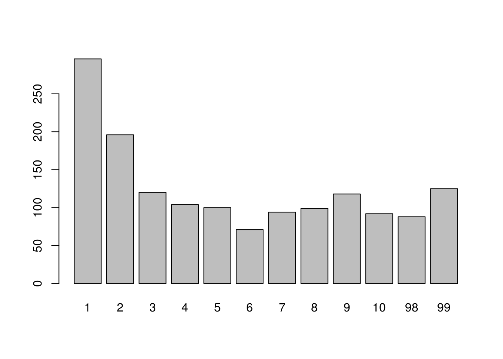
## Famiy income
## Frequency Percent
## 1 296 19.694
## 2 196 13.041
## 3 120 7.984
## 4 104 6.919
## 5 100 6.653
## 6 71 4.724
## 7 94 6.254
## 8 99 6.587
## 9 118 7.851
## 10 92 6.121
## 98 88 5.855
## 99 125 8.317
## Total 1503 100.000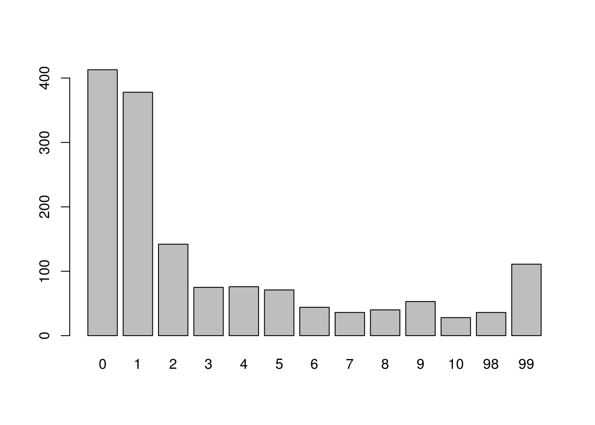
## R: Earnings II: categories
## Frequency Percent
## 0 413 27.478
## 1 378 25.150
## 2 142 9.448
## 3 75 4.990
## 4 76 5.057
## 5 71 4.724
## 6 44 2.927
## 7 36 2.395
## 8 40 2.661
## 9 53 3.526
## 10 28 1.863
## 98 36 2.395
## 99 111 7.385
## Total 1503 100.000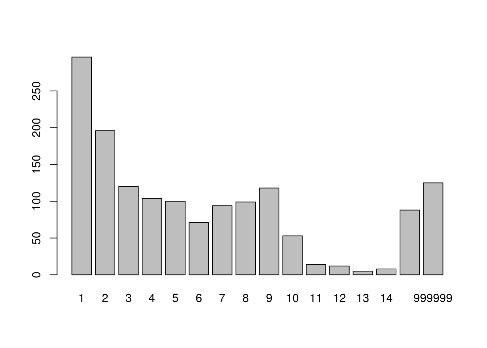
## Family income
## Frequency Percent
## 1 296 19.6939
## 2 196 13.0406
## 3 120 7.9840
## 4 104 6.9195
## 5 100 6.6534
## 6 71 4.7239
## 7 94 6.2542
## 8 99 6.5868
## 9 118 7.8510
## 10 53 3.5263
## 11 14 0.9315
## 12 12 0.7984
## 13 5 0.3327
## 14 8 0.5323
## 999998 88 5.8550
## 999999 125 8.3167
## Total 1503 100.0000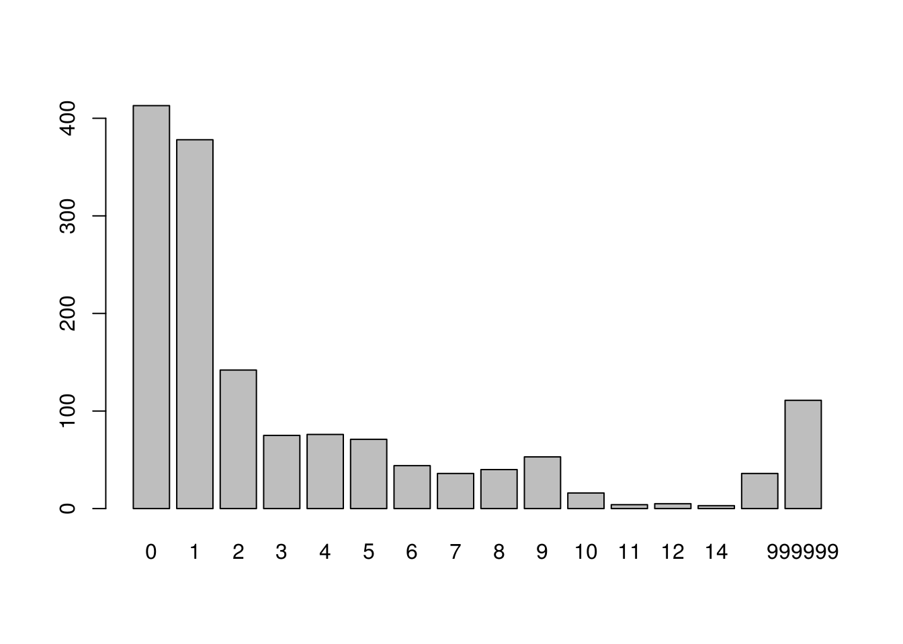
## R: Earnings II: categories
## Frequency Percent
## 0 413 27.4784
## 1 378 25.1497
## 2 142 9.4478
## 3 75 4.9900
## 4 76 5.0566
## 5 71 4.7239
## 6 44 2.9275
## 7 36 2.3952
## 8 40 2.6613
## 9 53 3.5263
## 10 16 1.0645
## 11 4 0.2661
## 12 5 0.3327
## 14 3 0.1996
## 999998 36 2.3952
## 999999 111 7.3852
## Total 1503 100.0000# take income, impute middle range, then divide by persons in household, then deciles
cl99$income_c= rec(cl99$income,rec =
"1=45000;
2=105500;
3=135500;
4=165500;
5=195500;
6=225500;
7=265500;
8=240500;
9=495500;
10=800500;
11=1250000;
12=1750000;
13=2500000;
14=4000000;
999998=NA;
999999=NA")## One or more of the old values are recoded into identical new values.
## Please check if you correctly specified the recode-pattern,
## else separate multiple values with comma, e.g. rec="a,b,c=1; d,e,f=2".
## Family income
## Frequency Percent Valid Percent
## 45000 296 19.6939 22.9457
## 105500 196 13.0406 15.1938
## 135500 120 7.9840 9.3023
## 165500 104 6.9195 8.0620
## 195500 100 6.6534 7.7519
## 225500 71 4.7239 5.5039
## 240500 99 6.5868 7.6744
## 265500 94 6.2542 7.2868
## 495500 118 7.8510 9.1473
## 800500 53 3.5263 4.1085
## 1250000 14 0.9315 1.0853
## 1750000 12 0.7984 0.9302
## 2500000 5 0.3327 0.3876
## 4000000 8 0.5323 0.6202
## NA's 213 14.1717
## Total 1503 100.0000 100.0000## col.nr var.name var.label
## 1 101 hompop How many persons in household
## 2 102 hhcycle Household cycle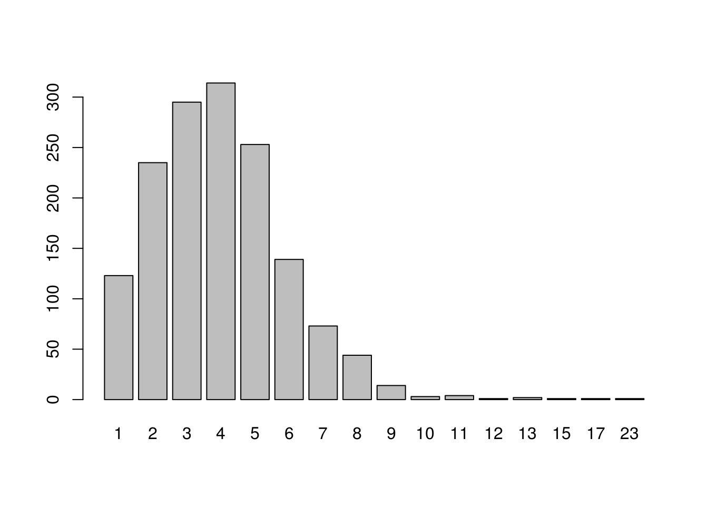
## How many persons in household
## Frequency Percent
## 1 123 8.18363
## 2 235 15.63540
## 3 295 19.62741
## 4 314 20.89155
## 5 253 16.83300
## 6 139 9.24817
## 7 73 4.85695
## 8 44 2.92748
## 9 14 0.93147
## 10 3 0.19960
## 11 4 0.26613
## 12 1 0.06653
## 13 2 0.13307
## 15 1 0.06653
## 17 1 0.06653
## 23 1 0.06653
## Total 1503 100.00000dat99$ingreso_pc= cl99$income_c/cl99$hompop
# Generar quintiles de ingreso
dat99 %>% mutate(Quint = ntile(ingreso_pc,5)) -> dat99
# Check
freq( dat99$Quint)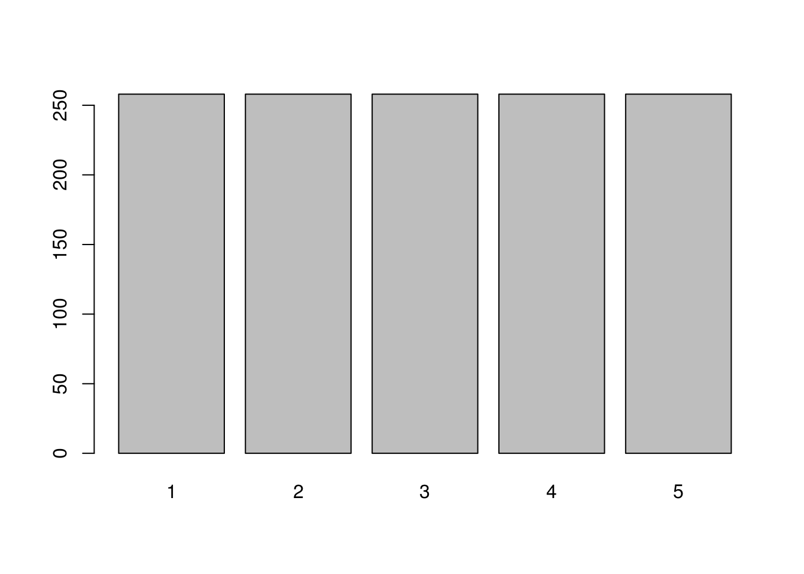
## dat99$Quint
## Frequency Percent Valid Percent
## 1 258 17.17 20
## 2 258 17.17 20
## 3 258 17.17 20
## 4 258 17.17 20
## 5 258 17.17 20
## NA's 213 14.17
## Total 1503 100.00 1001.3.5 d - redistribution 1999
## col.nr var.name var.label
## 1 104 incomer Famiy income
## 2 105 rincomer R: Earnings II: categories
## 3 133 income Family income
## 4 134 rincome R: Earnings II: categories
## 5 141 income_c Family income
## 6 11 v11 Differences in income are necessary
## 7 34 v34 Differences in income are too large
## 8 35 v35 Gov. must reduce differences in income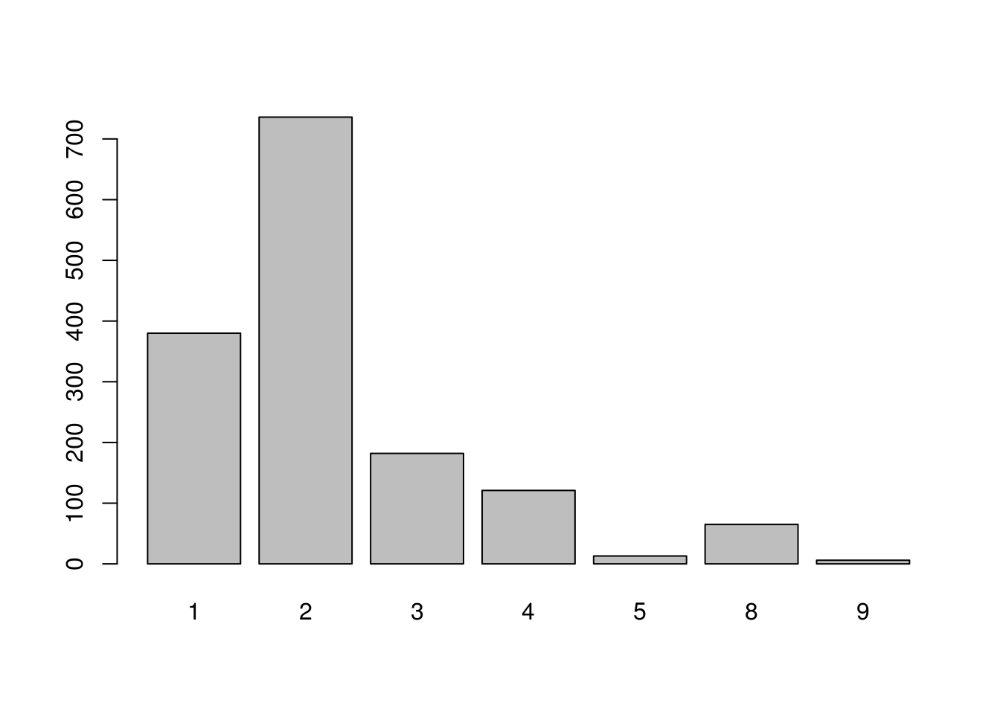
## Gov. must reduce differences in income
## Frequency Percent
## 1 380 25.2828
## 2 736 48.9687
## 3 182 12.1091
## 4 121 8.0506
## 5 13 0.8649
## 8 65 4.3247
## 9 6 0.3992
## Total 1503 100.0000## 1 2
## "Strongly agree" "Agree"
## 3 4
## "Neither agree nor disagree" "Disagree"
## 5 8
## "Strongly disagree" "Cant choose"
## 9
## "No answer"dat99$redis <-rec(cl99$v35, rec="8:9=NA;else=copy")
dat99$redis <-rec(dat99$redis, rec="rev")
freq(dat99$redis)
## Gov. must reduce differences in income
## Frequency Percent Valid Percent
## 1 13 0.8649 0.9078
## 2 121 8.0506 8.4497
## 3 182 12.1091 12.7095
## 4 736 48.9687 51.3966
## 5 380 25.2828 26.5363
## NA's 71 4.7239
## Total 1503 100.0000 100.0000dat99$redis <-set_labels(dat99$redis,labels= c("Muy en desacuerdo"=1, "En descacuerdo"=2,"Ni acuerdo ni desacuerdo"=3, "De acuerdo"=4, "Muy de acuerdo"=5))
get_labels(dat99$redis, values="as.name")## 1 2
## "Muy en desacuerdo" "En descacuerdo"
## 3 4
## "Ni acuerdo ni desacuerdo" "De acuerdo"
## 5
## "Muy de acuerdo"#dummy redis
dat99$redis_dummy<-ifelse(dat99$redis>3,1,0)
dat99$redis_dummy <-set_labels(dat99$redis_dummy,labels= c("En desacuerdo"=0, "De acuerdo"=1))
freq(dat99$redis_dummy)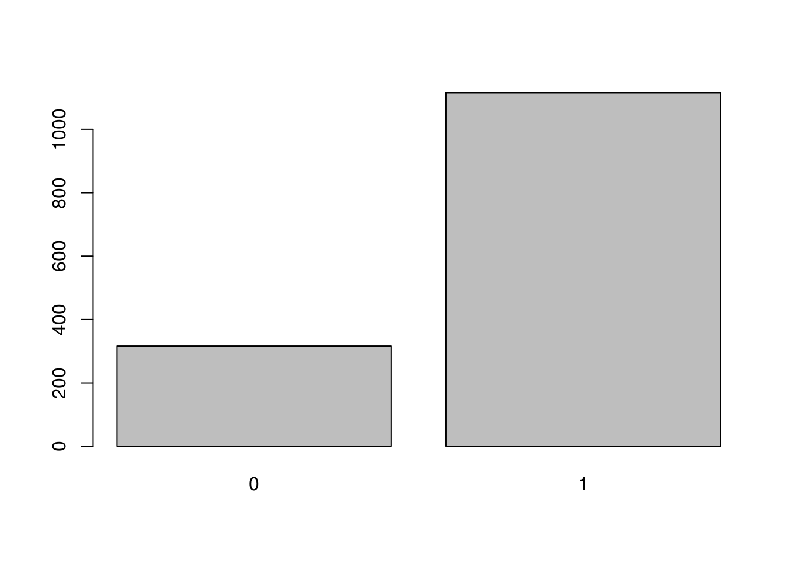
## dat99$redis_dummy
## Frequency Percent Valid Percent
## 0 316 21.025 22.07
## 1 1116 74.251 77.93
## NA's 71 4.724
## Total 1503 100.000 100.00
## Gov. must reduce differences in income
## Frequency Percent Valid Percent
## Muy en desacuerdo 13 0.8649 0.9078
## En descacuerdo 121 8.0506 8.4497
## Ni acuerdo ni desacuerdo 182 12.1091 12.7095
## De acuerdo 736 48.9687 51.3966
## Muy de acuerdo 380 25.2828 26.5363
## NA's 71 4.7239
## Total 1503 100.0000 100.00001.3.6 e - estatus subjetivo
##
## 1 2 3 4 5 6 7 8 9 10
## 4 6 26 46 279 236 249 272 188 197cl99$v46 <- car::recode(cl99$v46,"c(97,98,99)=NA",as.numeric = TRUE)
cl99$v46 <- sjmisc::rec(cl99$v46,rec="rev")
freq(cl99$v46) # OK esatus subjetivo 1999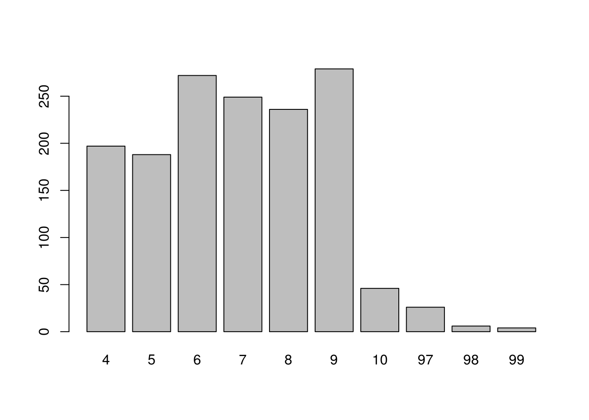
## Yourself on a scale from top to bottom
## Frequency Percent
## 4 197 13.1071
## 5 188 12.5083
## 6 272 18.0971
## 7 249 16.5669
## 8 236 15.7019
## 9 279 18.5629
## 10 46 3.0605
## 97 26 1.7299
## 98 6 0.3992
## 99 4 0.2661
## Total 1503 100.00001.3.7 Save 99 data
## [1] "salperobr" "saljusobr" "salperger" "saljusger" "gap_perc"
## [6] "lngap_perc" "gap_just" "lngap_just" "educ_rec" "ingreso_pc"
## [11] "Quint" "redis" "redis_dummy" "ess"1.4 Year 2009
1.4.1 Load data 2009
1.4.2 a- salaries perceived & just worker & manager 2009
# Find vars
find_var(cl09,"worker",search = "all") # v25: perceived worker, v30 just worker unrecoded## col.nr var.name
## 1 27 v25
## 2 32 v30
## 3 44 v42
## 4 59 v57
## 5 62 v60
## 6 65 v63
## 7 67 v65
## 8 71 v69
## 9 72 v70
## 10 73 v71
## 11 74 v72
## 12 133 isco88
## 13 139 spisco88
## var.label
## 1 Q4d Actually earn: How much do you think an unskilled worker in a factory earns?
## 2 Q5d Should earn: How much do you think an unskilled worker in a factory should e
## 3 Q9c Conflicts: between management and workers?
## 4 Q15b When you were [14-15-16] years old, what kind of work did your father do?
## 5 Q16c When you were [14-15-16] years old, what kind of work did your mother do?
## 6 Q18b In this first job, what was your main occupation?
## 7 Q19b [ISCO88]: And in your current job, what is your main occupation?
## 8 Q22a Which type of job did your father have when you were [14-15-16] years?
## 9 Q22b Which type of job did your mother have when you were [14-15-16] years?
## 10 Q23a Which type of job did you have in your first job - after leaving full-time
## 11 Q23b And which type of job do you have now in your current or last job?
## 12 R: Occupation ILO,ISCO 1988 4-digit
## 13 Spouse, partner: Occupation ILO,ISCO 1988 4-digit## col.nr var.name
## 1 25 v23
## 2 30 v28
## var.label
## 1 Q4b Actually earn: How much do you think a chairman of a large national corporat
## 2 Q5b Should earn: How much do you think a chairman of a large national company sh# Create object with vars & rename
dat09 <- cl09 %>% select(v25,v30,v23,v28) %>% rename(salperger=v23,
salperobr=v25,
saljusger=v28,
saljusobr=v30)
# Recodes
stargazer(dat09, type="text")##
## =================================================================================
## Statistic N Mean St. Dev. Min Pctl(25) Pctl(75) Max
## ---------------------------------------------------------------------------------
## salperobr 1,505 176,822.100 127,474.700 -99 150,000 200,000 3,000,000
## saljusobr 1,505 371,163.400 1,072,036.000 -99 250,000 380,000 25,000,000
## salperger 1,505 9,991,082.000 21,161,019.000 -99 2,000,000 10,000,000 400,000,000
## saljusger 1,505 5,524,310.000 14,224,452.000 -99 1,000,000 5,000,000 400,000,000
## ---------------------------------------------------------------------------------dat09[][dat09 >= 99999999998] <- NA # missings
dat09 <- dat09 %>%
mutate(salperobr=replace(salperobr, salperobr <= 40000 | salperobr>= 1000000, NA)) %>%
mutate(salperger=replace(salperger, salperger <= 250000 | salperger>= 100000001, NA)) %>%
mutate(saljusobr=replace(saljusobr, saljusobr <= 40000, NA)) %>%
mutate(saljusger=replace(saljusger, saljusger <= 100000, NA))
#---Brecha salarial percibida
dat09$gap_perc <- as.numeric(dat09$salperger/dat09$salperobr) # diferencia total
dat09$lngap_perc <- as.numeric(log(dat09$gap_perc)) # diferencia log
#---Brecha salarial justa
dat09$gap_just <- as.numeric(dat09$saljusger/dat09$saljusobr) # diferencia total
dat09$lngap_just <- as.numeric(log(dat09$gap_just)) # diferencia log
dim(na.omit(dat09))## [1] 1262 8##
## =======================================================================================================
## Statistic N Mean St. Dev. Min Pctl(25) Pctl(75) Max
## -------------------------------------------------------------------------------------------------------
## salperobr 1,419 181,636.700 61,462.730 50,000.000 150,000.000 200,000.000 800,000.000
## saljusobr 1,426 391,600.300 1,097,729.000 80,000.000 250,000.000 400,000.000 25,000,000.000
## salperger 1,330 10,065,000.000 14,464,905.000 300,000.000 3,000,000.000 10,000,000.000 100,000,000.000
## saljusger 1,310 6,346,388.000 15,075,037.000 120,000.000 2,000,000.000 6,000,000.000 400,000,000.000
## gap_perc 1,305 60.026 91.505 1.333 16.667 66.667 750.000
## lngap_perc 1,305 3.499 1.056 0.288 2.813 4.200 6.620
## gap_just 1,291 20.974 46.658 0.160 5.310 20.000 1,000.000
## lngap_just 1,291 2.401 1.071 -1.833 1.670 2.996 6.908
## -------------------------------------------------------------------------------------------------------1.4.3 b - education 2009
## col.nr var.name var.label
## 1 89 degree R: Education II-highest education level
## 2 90 ar_degr Country specific education: Argentina
## 3 91 at_degr Country specific education: Austria
## 4 92 au_degr Country specific education: Australia
## 5 93 be_degr Country specific education: Belgium (BE-FLA)
## 6 94 bg_degr Country specific education: Bulgaria
## 7 95 ch_degr Country specific education: Switzerland
## 8 96 cl_degr Country specific education: Chile
## 9 97 cn_degr Country specific education: China
## 10 98 cy_degr Country specific education: Cyprus
## 11 99 cz_degr Country specific education: Czech Republic
## 12 100 de_degr Country specific education: Germany
## 13 101 dk_degr Country specific education: Denmark
## 14 102 ee_degr Country specific education: Estonia
## 15 103 es_degr Country specific education: Spain
## 16 104 fi_degr Country specific education: Finland
## 17 105 fr_degr Country specific education: France
## 18 106 gb_degr Country specific education: Great Britain (GB-GBN)
## 19 107 hr_degr Country specific education: Croatia
## 20 108 hu_degr Country specific education: Hungary
## 21 109 il_degr Country specific education: Israel
## 22 110 is_degr Country specific education: Iceland
## 23 111 it_degr Country specific education: Italy
## 24 112 jp_degr Country specific education: Japan
## 25 113 kr_degr Country specific education: South Korea
## 26 114 lt_degr Country specific education: Lithuania
## 27 115 lv_degr Country specific education: Latvia
## 28 116 no_degr Country specific education: Norway
## 29 117 nz_degr Country specific education: New Zealand
## 30 118 ph_degr Country specific education: Philippines
## 31 119 pl_degr Country specific education: Poland
## 32 120 pt_degr Country specific education: Portugal
## 33 121 ru_degr Country specific education: Russia
## 34 122 se_degr Country specific education: Sweden
## 35 123 si_degr Country specific education: Slovenia
## 36 124 sk_degr Country specific education: Slovakia
## 37 125 tr_degr Country specific education: Turkey
## 38 126 tw_degr Country specific education: Taiwan
## 39 127 ua_degr Country specific education: Ukraine
## 40 128 us_degr Country specific education: United States
## 41 129 ve_degr Country specific education: Venezuela
## 42 130 za_degr Country specific education: South Africa##
## x <categorical>
## # total N=1505 valid N=1505 mean=5.12 sd=7.20
##
## val frq raw.prc valid.prc cum.prc
## 1 44 2.92 2.92 2.92
## 2 286 19.00 19.00 21.93
## 3 190 12.62 12.62 34.55
## 4 196 13.02 13.02 47.57
## 5 368 24.45 24.45 72.03
## 6 82 5.45 5.45 77.48
## 7 160 10.63 10.63 88.11
## 8 54 3.59 3.59 91.69
## 9 117 7.77 7.77 99.47
## 99 8 0.53 0.53 100.00
## NA 0 0.00 NA NA# Problema: no se encuentran los codigos originales en codebook, se derivan de la pregunta father education v317, que tiene las 7 categorías unesco asumiendo que las 7 de degree son las mismas:
# 1. None
# 2. Incomplete primary
# 3. Primary completed
# 4. Incomplete secondary (also includes completed qualifications at a level below academic secondary school
# completion – for example skilled manual qualifications given by trade schools.)
# 5. Secondary completed
# 6. Some tertiary education but less than a university Bachelor’s degree (Includes incomplete university. Also
# includes completed post-secondary courses below university Bachelor’s degree level. Examples are qualifications
# from US junior college, polytechnical institutes in many countries, and other similar post-secondary education.)
# 7. University completed (Bachelor’s degree or higher)
# Codificación original Francisco queda stand-by:
# #dat99 <- mutate(dat99, educ_rec = car::recode(dat99$educ, "3001:3004 = 1; = 2;3008=2; 3010 = 3;3007 = 4"))
# dat99$educ_rec[dat99$educ_rec== 3001:3004 ] <- 1
# dat99$educ_rec[dat99$educ_rec== 3005:3006 ] <- 2
# dat99$educ_rec[dat99$educ_rec== 3008] <- 2
# dat99$educ_rec[dat99$educ_rec== 3010] <- 3
# dat99$educ_rec[dat99$educ_rec== 3007] <- 4
edcl09 <- cl09 %>% select(cl_degr) %>% mutate(educ_rec=rec(cl_degr,rec = "1:4=1; 5:6=2; 8=2 ; 9=3 ; 7=4"))## One or more of the old values are recoded into identical new values.
## Please check if you correctly specified the recode-pattern,
## else separate multiple values with comma, e.g. rec="a,b,c=1; d,e,f=2".## [1] "cl_degr" "educ_rec"## salperobr saljusobr salperger
## Min. : 50000 Min. : 80000 Min. : 300000
## 1st Qu.:150000 1st Qu.: 250000 1st Qu.: 3000000
## Median :160000 Median : 300000 Median : 5000000
## Mean :181637 Mean : 391600 Mean : 10065000
## 3rd Qu.:200000 3rd Qu.: 400000 3rd Qu.: 10000000
## Max. :800000 Max. :25000000 Max. :100000000
## NA's :86 NA's :79 NA's :175
## saljusger gap_perc lngap_perc gap_just
## Min. : 120000 Min. : 1.333 Min. :0.2877 Min. : 0.16
## 1st Qu.: 2000000 1st Qu.: 16.667 1st Qu.:2.8134 1st Qu.: 5.31
## Median : 3000000 Median : 32.000 Median :3.4657 Median : 10.00
## Mean : 6346388 Mean : 60.026 Mean :3.4992 Mean : 20.97
## 3rd Qu.: 6000000 3rd Qu.: 66.667 3rd Qu.:4.1997 3rd Qu.: 20.00
## Max. :400000000 Max. :750.000 Max. :6.6201 Max. :1000.00
## NA's :195 NA's :200 NA's :200 NA's :214
## lngap_just educ_rec
## Min. :-1.833 Min. :1.000
## 1st Qu.: 1.670 1st Qu.:1.000
## Median : 2.303 Median :2.000
## Mean : 2.401 Mean :1.814
## 3rd Qu.: 2.996 3rd Qu.:2.000
## Max. : 6.908 Max. :4.000
## NA's :214 NA's :8## # A tibble: 5 x 2
## educ_rec m
## <dbl> <dbl>
## 1 1 27.8
## 2 2 33.3
## 3 3 35
## 4 4 50
## 5 NA 27.81.4.4 c-income 2009
## col.nr var.name
## 1 34 v32
## 2 35 v33
## 3 38 v36
## 4 40 v38
## 5 41 v39
## 6 182 ar_inc
## 7 183 at_inc
## 8 184 au_inc
## 9 185 be_inc
## 10 186 bg_inc
## 11 187 ch_inc
## 12 188 cl_inc
## 13 189 cn_inc
## 14 190 cy_inc
## 15 191 cz_inc
## 16 192 de_inc
## 17 193 dk_inc
## 18 194 ee_inc
## 19 195 es_inc
## 20 196 fi_inc
## 21 197 fr_inc
## 22 198 gb_inc
## 23 199 hr_inc
## 24 200 hu_inc
## 25 201 il_inc
## 26 202 is_inc
## 27 203 it_inc
## 28 204 jp_inc
## 29 205 kr_inc
## 30 206 lt_inc
## 31 207 lv_inc
## 32 208 no_inc
## 33 209 nz_inc
## 34 210 ph_inc
## 35 211 pl_inc
## 36 212 pt_inc
## 37 213 ru_inc
## 38 214 se_inc
## 39 215 si_inc
## 40 216 sk_inc
## 41 217 tr_inc
## 42 218 tw_inc
## 43 219 ua_inc
## 44 220 us_inc
## 45 221 ve_inc
## 46 222 za_inc
## 47 141 ar_rinc
## 48 142 at_rinc
## 49 143 au_rinc
## 50 144 be_rinc
## 51 145 bg_rinc
## 52 146 ch_rinc
## 53 148 cn_rinc
## 54 149 cy_rinc
## 55 150 cz_rinc
## 56 151 de_rinc
## 57 153 ee_rinc
## 58 155 fi_rinc
## 59 156 fr_rinc
## 60 157 gb_rinc
## 61 158 hr_rinc
## 62 159 hu_rinc
## 63 160 il_rinc
## 64 162 it_rinc
## 65 163 jp_rinc
## 66 164 kr_rinc
## 67 165 lt_rinc
## 68 166 lv_rinc
## 69 167 no_rinc
## 70 169 ph_rinc
## 71 170 pl_rinc
## 72 172 ru_rinc
## 73 173 se_rinc
## 74 174 si_rinc
## 75 175 sk_rinc
## 76 176 tr_rinc
## 77 177 tw_rinc
## 78 178 ua_rinc
## 79 179 us_rinc
## 80 181 za_rinc
## var.label
## 1 Q6a Differences in income in [Rs country] are too large.
## 2 Q6b It is responsib of governm to reduce differences in income betwn people with
## 3 Q7a Tax: Do you think people with high incomes should pay larger share of their
## 4 Q8a Just or unjust - that people with higher incomes can buy better health care?
## 5 Q8b Just or unjust - that people with higher incomes can buy better education fo
## 6 Family income: Argentina
## 7 Family income: Austria
## 8 Family income: Australia
## 9 Family income: Belgium (BE-FLA)
## 10 Family income: Bulgaria
## 11 Family income: Switzerland
## 12 Family income: Chile
## 13 Family income: China
## 14 Family income: Cyprus
## 15 Family income: Czech Republic
## 16 Family income: Germany
## 17 Family income: Denmark
## 18 Family income: Estonia
## 19 Family income: Spain
## 20 Family income: Finland
## 21 Family income: France
## 22 Family income: Great Britain (GB-GBN)
## 23 Family income: Croatia
## 24 Family income: Hungary
## 25 Family income: Israel
## 26 Family income: Iceland
## 27 Family income: Italy
## 28 Family income: Japan
## 29 Family income: South Korea
## 30 Family income: Lithuania
## 31 Family income: Latvia
## 32 Family income: Norway
## 33 Family income: New Zealand
## 34 Family income: Philippines
## 35 Family income: Poland
## 36 Family income: Portugal
## 37 Family income: Russia
## 38 Family income: Sweden
## 39 Family income: Slovenia
## 40 Family income: Slovakia
## 41 Family income: Turkey
## 42 Family income: Taiwan
## 43 Family income: Ukraine
## 44 Family income: United States
## 45 Family income: Venezuela
## 46 Family income: South Africa
## 47 R: Earnings: Argentina
## 48 R: Earnings: Austria
## 49 R: Earnings: Australia
## 50 R: Earnings: Belgium (BE-FLA)
## 51 R: Earnings: Bulgaria
## 52 R: Earnings: Switzerland
## 53 R: Earnings: China
## 54 R: Earnings: Cyprus
## 55 R: Earnings: Czech Republic
## 56 R: Earnings: Germany
## 57 R: Earnings: Estonia
## 58 R: Earnings: Finland
## 59 R: Earnings: France
## 60 R: Earnings: Great Britain (GB-GBN)
## 61 R: Earnings: Croatia
## 62 R: Earnings: Hungary
## 63 R: Earnings: Israel
## 64 R: Earnings: Italy
## 65 R: Earnings: Japan
## 66 R: Earnings: South Korea
## 67 R: Earnings: Lithuania
## 68 R: Earnings: Latvia
## 69 R: Earnings: Norway
## 70 R: Earnings: Philippines
## 71 R: Earnings: Poland
## 72 R: Earnings: Russia
## 73 R: Earnings: Sweden
## 74 R: Earnings: Slovenia
## 75 R: Earnings: Slovakia
## 76 R: Earnings: Turkey
## 77 R: Earnings: Taiwan
## 78 R: Earnings: Ukraine
## 79 R: Earnings: United States
## 80 R: Earnings: South Africa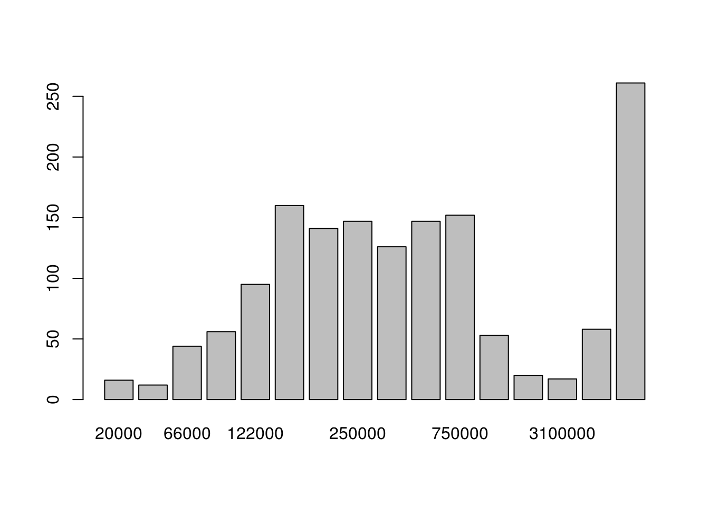
## Family income: Chile
## Frequency Percent
## 20000 16 1.0631
## 45000 12 0.7973
## 66000 44 2.9236
## 90000 56 3.7209
## 122000 95 6.3123
## 155000 160 10.6312
## 200000 141 9.3688
## 250000 147 9.7674
## 310000 126 8.3721
## 400000 147 9.7674
## 750000 152 10.0997
## 1500000 53 3.5216
## 2500000 20 1.3289
## 3100000 17 1.1296
## 9999998 58 3.8538
## 9999999 261 17.3422
## Total 1505 100.0000# take income, impute middle range, then divide by persons in household, then deciles
cl09$income_c= rec(cl09$cl_inc,rec =
"20000=45000;
45000=105500;
66000=135500;
90000=165500;
122000=195500;
155000=225500;
200000=265500;
250000=240500;
310000=495500;
400000=800500;
750000=1250000;
1500000=1750000;
2500000=2500000;
3100000=4000000;
9999998=NA;
9999999=NA")## One or more of the old values are recoded into identical new values.
## Please check if you correctly specified the recode-pattern,
## else separate multiple values with comma, e.g. rec="a,b,c=1; d,e,f=2".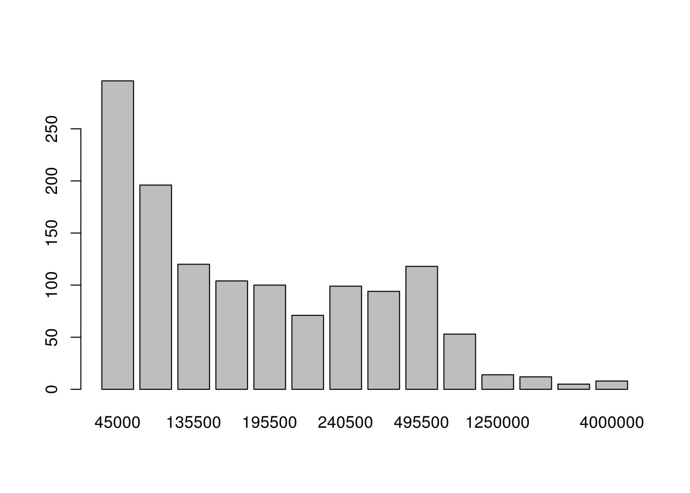
## Family income
## Frequency Percent Valid Percent
## 45000 296 19.6939 22.9457
## 105500 196 13.0406 15.1938
## 135500 120 7.9840 9.3023
## 165500 104 6.9195 8.0620
## 195500 100 6.6534 7.7519
## 225500 71 4.7239 5.5039
## 240500 99 6.5868 7.6744
## 265500 94 6.2542 7.2868
## 495500 118 7.8510 9.1473
## 800500 53 3.5263 4.1085
## 1250000 14 0.9315 1.0853
## 1750000 12 0.7984 0.9302
## 2500000 5 0.3327 0.3876
## 4000000 8 0.5323 0.6202
## NA's 213 14.1717
## Total 1503 100.0000 100.0000## col.nr var.name
## 1 223 hompop
## 2 60 v58
## 3 61 v59
## 4 224 hhcycle
## var.label
## 1 How many persons in household
## 2 Q16a When you were [14-15-16] years old, did your mother work outside the househ
## 3 Q16b In her last job - for whom did your mother work?
## 4 Household composition: children and adults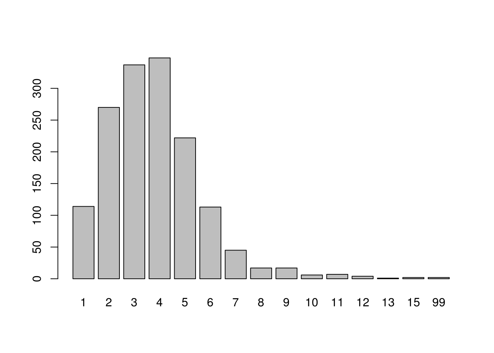
## How many persons in household
## Frequency Percent
## 1 114 7.57475
## 2 270 17.94020
## 3 337 22.39203
## 4 348 23.12292
## 5 222 14.75083
## 6 113 7.50831
## 7 45 2.99003
## 8 17 1.12957
## 9 17 1.12957
## 10 6 0.39867
## 11 7 0.46512
## 12 4 0.26578
## 13 1 0.06645
## 15 2 0.13289
## 99 2 0.13289
## Total 1505 100.00000dat09$ingreso_pc= cl09$income_c/cl09$hompop
# Generar quintiles de ingreso
dat09 %>% mutate(Quint = ntile(ingreso_pc,5)) -> dat09
# Check
freq( dat09$Quint)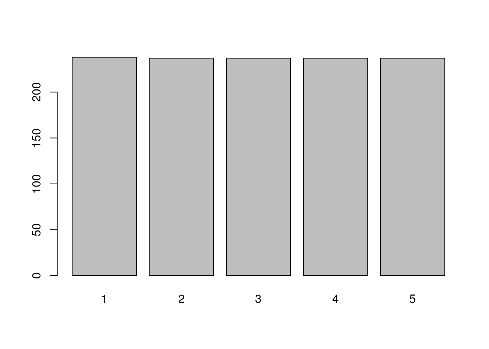
## dat09$Quint
## Frequency Percent Valid Percent
## 1 238 15.81 20.07
## 2 237 15.75 19.98
## 3 237 15.75 19.98
## 4 237 15.75 19.98
## 5 237 15.75 19.98
## NA's 319 21.20
## Total 1505 100.00 100.001.4.5 d - redistribution 2009
## col.nr var.name
## 1 358 income_c
## 2 34 v32
## 3 35 v33
## 4 38 v36
## 5 40 v38
## 6 41 v39
## 7 182 ar_inc
## 8 183 at_inc
## 9 184 au_inc
## 10 185 be_inc
## 11 186 bg_inc
## 12 187 ch_inc
## 13 188 cl_inc
## 14 189 cn_inc
## 15 190 cy_inc
## 16 191 cz_inc
## 17 192 de_inc
## 18 193 dk_inc
## 19 194 ee_inc
## 20 195 es_inc
## 21 196 fi_inc
## 22 197 fr_inc
## 23 198 gb_inc
## 24 199 hr_inc
## 25 200 hu_inc
## 26 201 il_inc
## 27 202 is_inc
## 28 203 it_inc
## 29 204 jp_inc
## 30 205 kr_inc
## 31 206 lt_inc
## 32 207 lv_inc
## 33 208 no_inc
## 34 209 nz_inc
## 35 210 ph_inc
## 36 211 pl_inc
## 37 212 pt_inc
## 38 213 ru_inc
## 39 214 se_inc
## 40 215 si_inc
## 41 216 sk_inc
## 42 217 tr_inc
## 43 218 tw_inc
## 44 219 ua_inc
## 45 220 us_inc
## 46 221 ve_inc
## 47 222 za_inc
## 48 141 ar_rinc
## 49 142 at_rinc
## 50 143 au_rinc
## 51 144 be_rinc
## 52 145 bg_rinc
## 53 146 ch_rinc
## 54 148 cn_rinc
## 55 149 cy_rinc
## 56 150 cz_rinc
## 57 151 de_rinc
## 58 153 ee_rinc
## 59 155 fi_rinc
## 60 156 fr_rinc
## 61 157 gb_rinc
## 62 158 hr_rinc
## 63 159 hu_rinc
## 64 160 il_rinc
## 65 162 it_rinc
## 66 163 jp_rinc
## 67 164 kr_rinc
## 68 165 lt_rinc
## 69 166 lv_rinc
## 70 167 no_rinc
## 71 169 ph_rinc
## 72 170 pl_rinc
## 73 172 ru_rinc
## 74 173 se_rinc
## 75 174 si_rinc
## 76 175 sk_rinc
## 77 176 tr_rinc
## 78 177 tw_rinc
## 79 178 ua_rinc
## 80 179 us_rinc
## 81 181 za_rinc
## var.label
## 1 Family income: Chile
## 2 Q6a Differences in income in [Rs country] are too large.
## 3 Q6b It is responsib of governm to reduce differences in income betwn people with
## 4 Q7a Tax: Do you think people with high incomes should pay larger share of their
## 5 Q8a Just or unjust - that people with higher incomes can buy better health care?
## 6 Q8b Just or unjust - that people with higher incomes can buy better education fo
## 7 Family income: Argentina
## 8 Family income: Austria
## 9 Family income: Australia
## 10 Family income: Belgium (BE-FLA)
## 11 Family income: Bulgaria
## 12 Family income: Switzerland
## 13 Family income: Chile
## 14 Family income: China
## 15 Family income: Cyprus
## 16 Family income: Czech Republic
## 17 Family income: Germany
## 18 Family income: Denmark
## 19 Family income: Estonia
## 20 Family income: Spain
## 21 Family income: Finland
## 22 Family income: France
## 23 Family income: Great Britain (GB-GBN)
## 24 Family income: Croatia
## 25 Family income: Hungary
## 26 Family income: Israel
## 27 Family income: Iceland
## 28 Family income: Italy
## 29 Family income: Japan
## 30 Family income: South Korea
## 31 Family income: Lithuania
## 32 Family income: Latvia
## 33 Family income: Norway
## 34 Family income: New Zealand
## 35 Family income: Philippines
## 36 Family income: Poland
## 37 Family income: Portugal
## 38 Family income: Russia
## 39 Family income: Sweden
## 40 Family income: Slovenia
## 41 Family income: Slovakia
## 42 Family income: Turkey
## 43 Family income: Taiwan
## 44 Family income: Ukraine
## 45 Family income: United States
## 46 Family income: Venezuela
## 47 Family income: South Africa
## 48 R: Earnings: Argentina
## 49 R: Earnings: Austria
## 50 R: Earnings: Australia
## 51 R: Earnings: Belgium (BE-FLA)
## 52 R: Earnings: Bulgaria
## 53 R: Earnings: Switzerland
## 54 R: Earnings: China
## 55 R: Earnings: Cyprus
## 56 R: Earnings: Czech Republic
## 57 R: Earnings: Germany
## 58 R: Earnings: Estonia
## 59 R: Earnings: Finland
## 60 R: Earnings: France
## 61 R: Earnings: Great Britain (GB-GBN)
## 62 R: Earnings: Croatia
## 63 R: Earnings: Hungary
## 64 R: Earnings: Israel
## 65 R: Earnings: Italy
## 66 R: Earnings: Japan
## 67 R: Earnings: South Korea
## 68 R: Earnings: Lithuania
## 69 R: Earnings: Latvia
## 70 R: Earnings: Norway
## 71 R: Earnings: Philippines
## 72 R: Earnings: Poland
## 73 R: Earnings: Russia
## 74 R: Earnings: Sweden
## 75 R: Earnings: Slovenia
## 76 R: Earnings: Slovakia
## 77 R: Earnings: Turkey
## 78 R: Earnings: Taiwan
## 79 R: Earnings: Ukraine
## 80 R: Earnings: United States
## 81 R: Earnings: South Africa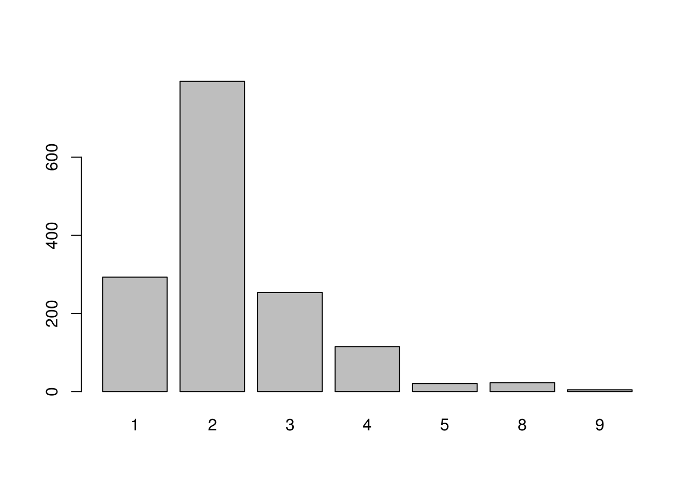
## Q6b It is responsib of governm to reduce differences in income betwn people with
## Frequency Percent
## 1 293 19.4684
## 2 794 52.7575
## 3 254 16.8771
## 4 115 7.6412
## 5 21 1.3953
## 8 23 1.5282
## 9 5 0.3322
## Total 1505 100.0000## 1 2
## "Strongly agree" "Agree"
## 3 4
## "Neither agree nor disagree" "Disagree"
## 5 8
## "Strongly disagree" "Cant choose"
## 9
## "NA"dat09$redis <-rec(cl09$v33, rec="8:9=NA;else=copy")
dat09$redis <-rec(dat09$redis, rec="rev")
freq(dat09$redis)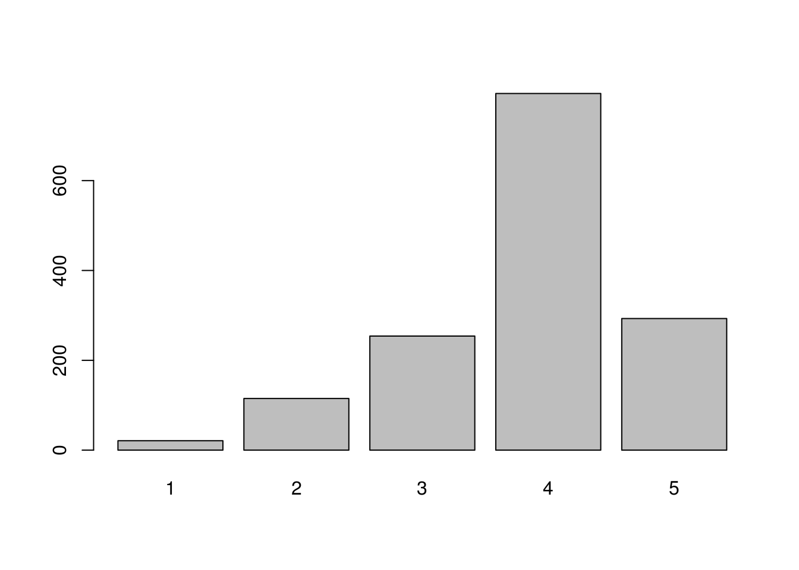
## Q6b It is responsib of governm to reduce differences in income betwn people with
## Frequency Percent Valid Percent
## 1 21 1.395 1.422
## 2 115 7.641 7.786
## 3 254 16.877 17.197
## 4 794 52.757 53.758
## 5 293 19.468 19.838
## NA's 28 1.860
## Total 1505 100.000 100.000dat09$redis <-set_labels(dat09$redis,labels= c("Muy en desacuerdo"=1, "En descacuerdo"=2,"Ni acuerdo ni desacuerdo"=3, "De acuerdo"=4, "Muy de acuerdo"=5))
get_labels(dat09$redis, values="as.name")## 1 2
## "Muy en desacuerdo" "En descacuerdo"
## 3 4
## "Ni acuerdo ni desacuerdo" "De acuerdo"
## 5
## "Muy de acuerdo"#dummy redis
dat09$redis_dummy<-ifelse(dat09$redis>3,1,0)
dat09$redis_dummy <-set_labels(dat09$redis_dummy,labels= c("En desacuerdo"=0, "De acuerdo"=1))
freq(dat09$redis_dummy)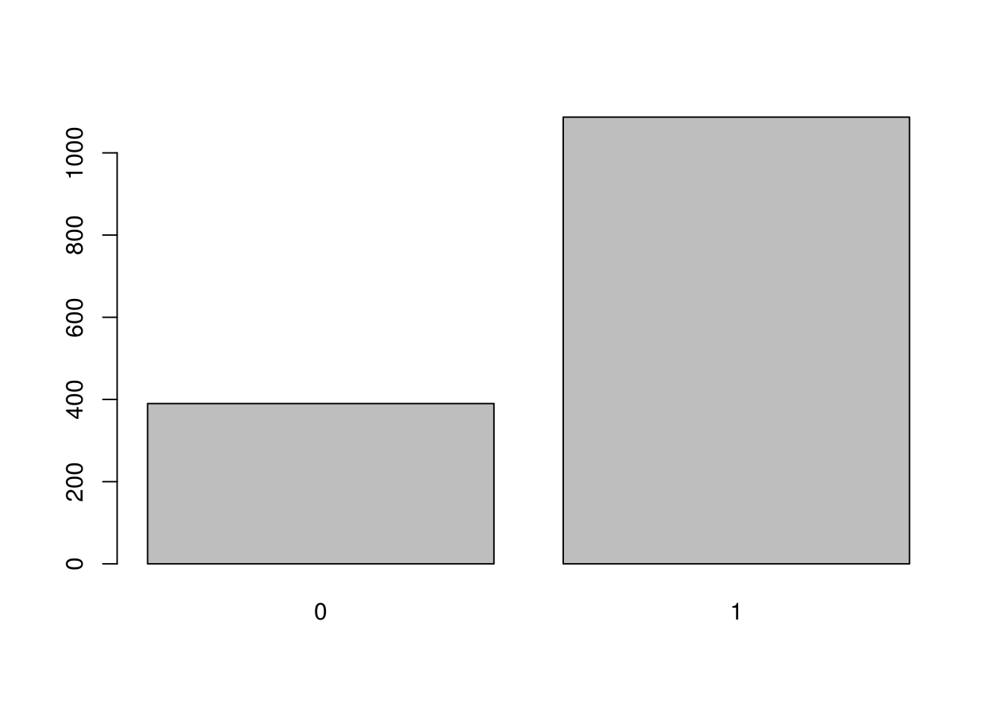
## dat09$redis_dummy
## Frequency Percent Valid Percent
## 0 390 25.91 26.4
## 1 1087 72.23 73.6
## NA's 28 1.86
## Total 1505 100.00 100.01.4.6 e - estatus subjetivo
##
## 1 2 3 4 5 6 7 8 9 10 98 99
## 138 132 251 353 404 123 54 23 9 3 12 3cl09$v44 <- car::recode(cl09$v44,"c(98,99)=NA",as.numeric = TRUE)
freq(cl09$v44) # OK esatus subjetivo 2009## Q10a [TOPBOT] Groups tending towards top+bottom. Where would you put yourself on
## Frequency Percent Valid Percent
## 1 138 9.1694 9.2617
## 2 132 8.7708 8.8591
## 3 251 16.6777 16.8456
## 4 353 23.4551 23.6913
## 5 404 26.8439 27.1141
## 6 123 8.1728 8.2550
## 7 54 3.5880 3.6242
## 8 23 1.5282 1.5436
## 9 9 0.5980 0.6040
## 10 3 0.1993 0.2013
## NA's 15 0.9967
## Total 1505 100.0000 100.0000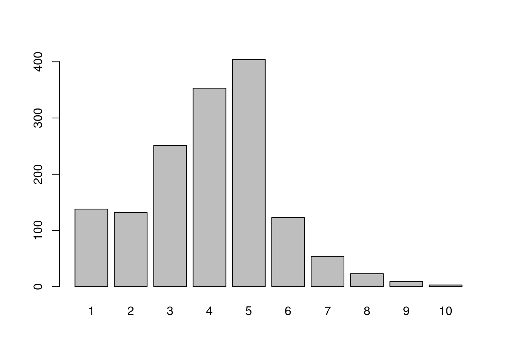
## Q10a [TOPBOT] Groups tending towards top+bottom. Where would you put yourself on
## Frequency Percent Valid Percent
## 1 138 9.1694 9.2617
## 2 132 8.7708 8.8591
## 3 251 16.6777 16.8456
## 4 353 23.4551 23.6913
## 5 404 26.8439 27.1141
## 6 123 8.1728 8.2550
## 7 54 3.5880 3.6242
## 8 23 1.5282 1.5436
## 9 9 0.5980 0.6040
## 10 3 0.1993 0.2013
## NA's 15 0.9967
## Total 1505 100.0000 100.00001.4.7 Save 09 data
1.5 Year 2019
1.5.1 Load data 2019
1.5.2 a- salaries perceived & just worker & manager 2019
# Find vars
find_var(cl19,"obrero",search = "all") # m2_p2_obrero: perceived worker, m2_p3_obrero: just worker## col.nr var.name
## 1 101 m2_p2_obrero
## 2 111 m2_p3_obrero
## 3 102 m2_p2a_4
## 4 189 ds_p16_1
## 5 192 ds_p19a
## 6 198 ds_p25a_1
## 7 199 ds_p25b_1
## 8 200 ds_p25c_1
## var.label
## 1 ¿Cuánto cree Ud. que gana al mes "Un obrero no calificado de una fábrica"? Monto
## 2 ¿Cuánto cree Ud. que las personas en estos trabajos deberían ganar al mes, despu
## 3 ¿Cuánto cree Ud. que gana al mes "Un obrero no calificado de una fábrica"? Rango
## 4 Y cuando Ud. tenía 15 años, ¿qué tipo de trabajo tenía su padre? ¿cuál era la oc
## 5 Y cuando Ud. tenía 15 años, ¿qué tipo de trabajo tenía su madre? ¿cuál era la oc
## 6 ¿Cuál es o era la actividad principal de su esposo/a o pareja? Si no está trabaj
## 7 ¿Cuáles son o eran algunas de sus principales funciones? Se ruega escribir una d
## 8 ¿Qué es lo que principalmente hace la empresa u organización en la que ella o él## col.nr var.name
## 1 97 m2_p2_presidente
## 2 107 m2_p3_presidente
## 3 98 m2_p2a_2
## var.label
## 1 ¿Cuánto cree Ud. que gana al mes "El presidente de una gran empresa nacional"? M
## 2 ¿Cuánto cree Ud. que las personas en estos trabajos deberían ganar al mes, despu
## 3 ¿Cuánto cree Ud. que gana al mes "El presidente de una gran empresa nacional"?:# Create object with vars & rename
dat19 <- cl19 %>% select(m2_p2_presidente,m2_p2_obrero,m2_p3_obrero,m2_p3_presidente) %>% rename(salperger=m2_p2_presidente,
salperobr=m2_p2_obrero,
saljusger=m2_p3_presidente,
saljusobr=m2_p3_obrero)
# Recodes
stargazer(dat19, type="text")##
## =====================================================================================================
## Statistic N Mean St. Dev. Min Pctl(25) Pctl(75) Max
## -----------------------------------------------------------------------------------------------------
## salperger 1,041 11,866,859.000 13,282,919.000 300,000.000 4,000,000.000 15,000,000.000 90,000,000.000
## salperobr 1,272 364,542.300 270,663.800 100.000 300,000.000 400,000.000 8,000,000.000
## saljusobr 1,255 554,184.600 271,174.400 300.000 400,000.000 600,000.000 4,000,000.000
## saljusger 985 6,366,528.000 9,299,138.000 50,000.000 2,000,000.000 7,000,000.000 90,000,000.000
## -----------------------------------------------------------------------------------------------------dat19[][dat19 >= 99999999998] <- NA # missings
dat19 <- dat19 %>%
mutate(salperobr=replace(salperobr, salperobr <= 40000 | salperobr>= 1000000, NA)) %>%
mutate(salperger=replace(salperger, salperger <= 250000 | salperger>= 100000001, NA)) %>%
mutate(saljusobr=replace(saljusobr, saljusobr <= 40000, NA)) %>%
mutate(saljusger=replace(saljusger, saljusger <= 100000, NA))
#---Brecha salarial percibida
dat19$gap_perc <- as.numeric(dat19$salperger/dat19$salperobr) # diferencia total
dat19$lngap_perc <- as.numeric(log(dat19$gap_perc)) # diferencia log
#---Brecha salarial justa
dat19$gap_just <- as.numeric(dat19$saljusger/dat19$saljusobr) # diferencia total
dat19$lngap_just <- as.numeric(log(dat19$gap_just)) # diferencia log
dim(na.omit(dat19))## [1] 890 8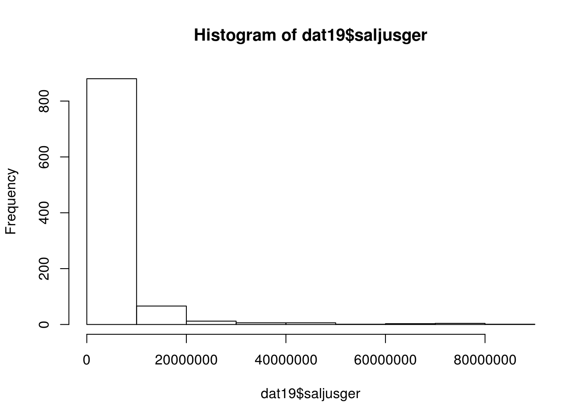
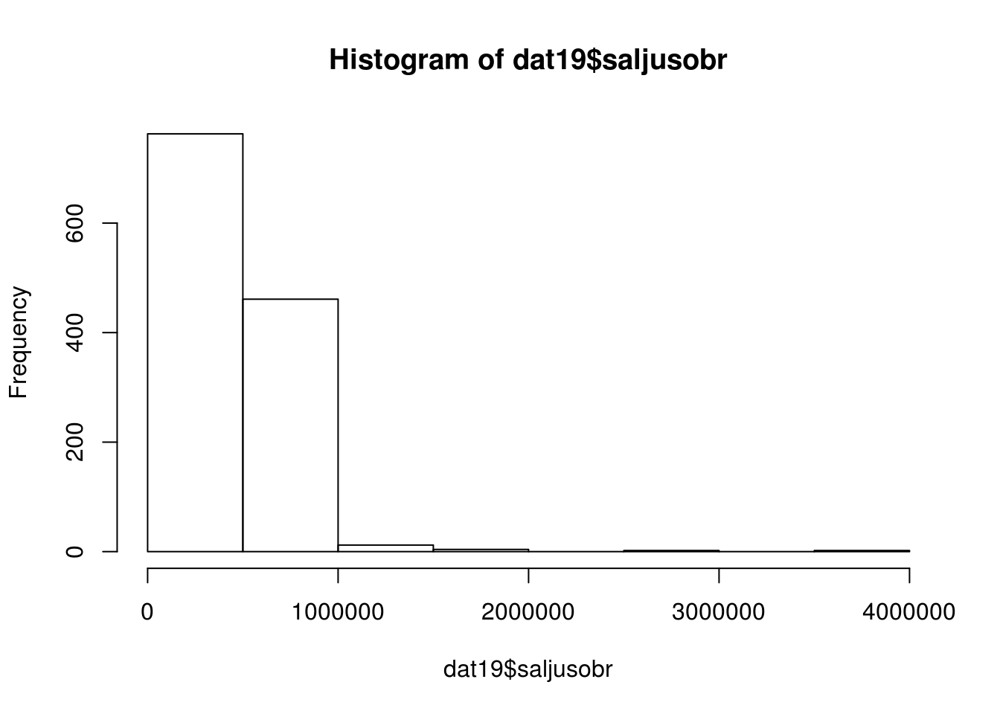
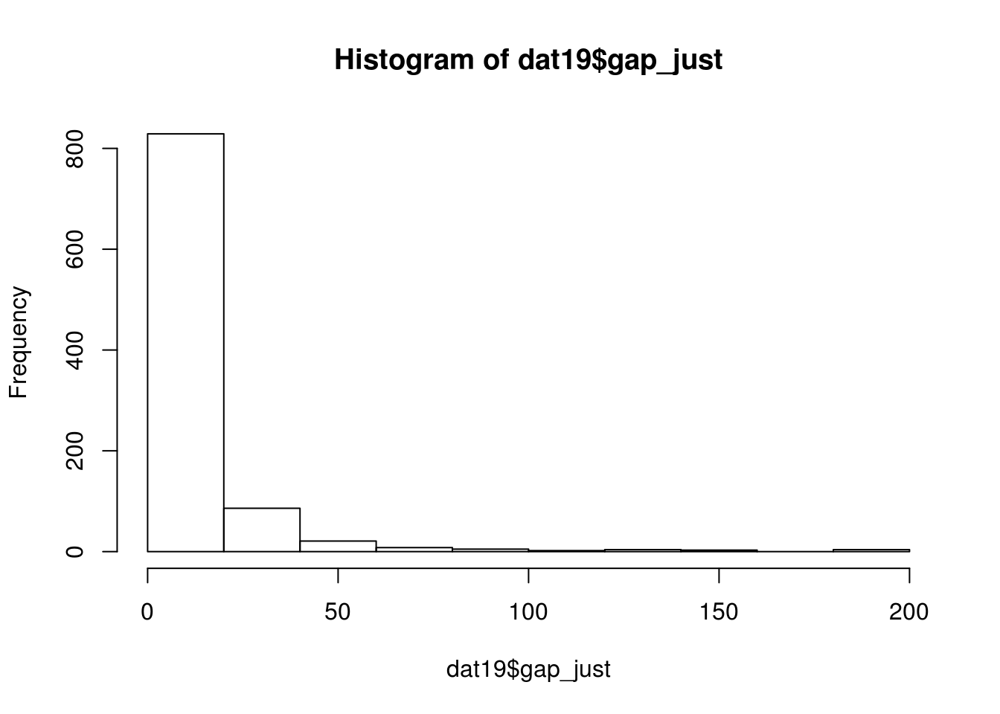
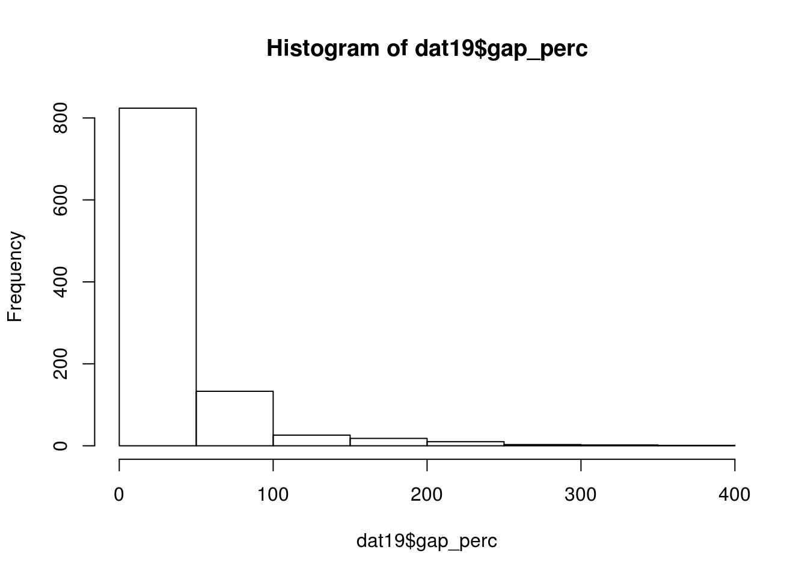
1.5.3 b - education 2019
## col.nr var.name
## 1 27 mb_12_4
## 2 11 mb_p1_1
## 3 12 mb_p1_2
## 4 13 mb_p1_3
## 5 175 ds_p4
## 6 187 ds_p14
## 7 190 ds_p17
## 8 192 ds_p19a
## 9 199 ds_p25b_1
## 10 200 ds_p25c_1
## var.label
## 1 ¿Qué nota le pondría usted al Gobierno por su gestión en Educación?
## 2 Hay una serie de problemas que tiene nuestro país. ¿Cuáles son los tres problema
## 3 ¿Cuáles son los tres problemas a los que debería dedicar el mayor esfuerzo en so
## 4 ¿Cuáles son los tres problemas a los que debería dedicar el mayor esfuerzo en so
## 5 Sin tomar en cuenta las repeticiones de curso ¿cuál es su nivel educacional?
## 6 ¿Podría decirme cuál es el nivel educacional alcanzado por su padre?
## 7 ¿Podría decirme cuál es el nivel educacional alcanzado por su madre?
## 8 Y cuando Ud. tenía 15 años, ¿qué tipo de trabajo tenía su madre? ¿cuál era la oc
## 9 ¿Cuáles son o eran algunas de sus principales funciones? Se ruega escribir una d
## 10 ¿Qué es lo que principalmente hace la empresa u organización en la que ella o él##
## x <categorical>
## # total N=1380 valid N=1380 mean=4.64 sd=8.75
##
## val frq raw.prc valid.prc cum.prc
## 0 21 1.52 1.52 1.52
## 1 253 18.33 18.33 19.86
## 2 135 9.78 9.78 29.64
## 3 148 10.72 10.72 40.36
## 4 410 29.71 29.71 70.07
## 5 77 5.58 5.58 75.65
## 6 118 8.55 8.55 84.20
## 7 65 4.71 4.71 88.91
## 8 116 8.41 8.41 97.32
## 9 26 1.88 1.88 99.20
## 99 11 0.80 0.80 100.00
## NA 0 0.00 NA NA# Problema: no se encuentran los codigos originales en codebook, se derivan de la pregunta father education v317, que tiene las 7 categorías unesco asumiendo que las 7 de degree son las mismas:
# 1. None
# 2. Incomplete primary
# 3. Primary completed
# 4. Incomplete secondary (also includes completed qualifications at a level below academic secondary school
# completion – for example skilled manual qualifications given by trade schools.)
# 5. Secondary completed
# 6. Some tertiary education but less than a university Bachelor’s degree (Includes incomplete university. Also
# includes completed post-secondary courses below university Bachelor’s degree level. Examples are qualifications
# from US junior college, polytechnical institutes in many countries, and other similar post-secondary education.)
# 7. University completed (Bachelor’s degree or higher)
# Codificación original Francisco queda stand-by:
# #dat99 <- mutate(dat99, educ_rec = car::recode(dat99$educ, "3001:3004 = 1; = 2;3008=2; 3010 = 3;3007 = 4"))
# dat99$educ_rec[dat99$educ_rec== 3001:3004 ] <- 1
# dat99$educ_rec[dat99$educ_rec== 3005:3006 ] <- 2
# dat99$educ_rec[dat99$educ_rec== 3008] <- 2
# dat99$educ_rec[dat99$educ_rec== 3010] <- 3
# dat99$educ_rec[dat99$educ_rec== 3007] <- 4
edcl19 <- cl19 %>% select(ds_p4) %>% mutate(educ_rec=rec(ds_p4,rec = "0:3=1; 4:5=2 ;7=2 ; 6=3 ; 8:9=4"))## One or more of the old values are recoded into identical new values.
## Please check if you correctly specified the recode-pattern,
## else separate multiple values with comma, e.g. rec="a,b,c=1; d,e,f=2".## salperger salperobr saljusobr saljusger
## Min. : 300000 Min. : 42000 Min. : 50000 Min. : 200000
## 1st Qu.: 4000000 1st Qu.:300000 1st Qu.: 400000 1st Qu.: 2000000
## Median : 8000000 Median :300000 Median : 500000 Median : 4000000
## Mean :11866859 Mean :355602 Mean : 558919 Mean : 6405056
## 3rd Qu.:15000000 3rd Qu.:400000 3rd Qu.: 600000 3rd Qu.: 7000000
## Max. :90000000 Max. :800000 Max. :4000000 Max. :90000000
## NA's :339 NA's :133 NA's :136 NA's :401
## gap_perc lngap_perc gap_just lngap_just
## Min. : 0.75 Min. :-0.2877 Min. : 0.375 Min. :-0.9808
## 1st Qu.: 11.67 1st Qu.: 2.4567 1st Qu.: 3.723 1st Qu.: 1.3146
## Median : 22.50 Median : 3.1135 Median : 7.500 Median : 2.0149
## Mean : 36.76 Mean : 3.1143 Mean : 13.508 Mean : 2.0172
## 3rd Qu.: 42.86 3rd Qu.: 3.7579 3rd Qu.: 15.000 3rd Qu.: 2.7081
## Max. :353.33 Max. : 5.8674 Max. :200.000 Max. : 5.2983
## NA's :363 NA's :363 NA's :418 NA's :418
## educ_rec
## Min. :1.000
## 1st Qu.:1.000
## Median :2.000
## Mean :1.887
## 3rd Qu.:2.000
## Max. :4.000
## NA's :11##
## 1 2 3 4
## 557 552 118 142## # A tibble: 5 x 2
## educ_rec m
## <dbl> <dbl>
## 1 1 20
## 2 2 21.6
## 3 3 29.3
## 4 4 28.6
## 5 NA 41.71.5.4 c-income 2019
## col.nr var.name
## 1 212 ds_p34
## 2 220 ds_p39
## 3 226 ds_p45_1
## 4 227 ds_p45_2
## 5 228 ds_p45_3
## 6 229 ds_p45_4
## 7 230 ds_p45_5
## 8 231 ds_p45_6
## 9 232 ds_p45_7
## 10 233 ds_p45_8
## 11 234 ds_p45_9
## 12 235 ds_p45_10
## 13 236 ds_p45_11
## 14 237 ds_p45_12
## 15 238 ds_p45_13
## 16 239 ds_p45_14
## 17 240 ds_p45_15
## 18 241 ds_p45_16
## 19 242 ds_p45_17
## 20 243 ds_p46_1
## 21 244 ds_p46_2
## var.label
## 1 ¿Cuántas personas viven permanentemente en este hogar?
## 2 ¿Podría Ud. indicarme en cuál de ellos se encuentra este hogar, considerando tod
## 3 ¿Tiene este hogar alguno de los siguientes artefactos y/o servicios? TV a color
## 4 ¿Tiene este hogar alguno de los siguientes artefactos y/o servicios? Videograbad
## 5 ¿Tiene este hogar alguno de los siguientes artefactos y/o servicios? Conexión a
## 6 ¿Tiene este hogar alguno de los siguientes artefactos y/o servicios? Minicompone
## 7 ¿Tiene este hogar alguno de los siguientes artefactos y/o servicios? Lavadora au
## 8 ¿Tiene este hogar alguno de los siguientes artefactos y/o servicios? Secadora o
## 9 ¿Tiene este hogar alguno de los siguientes artefactos y/o servicios? Refrigerado
## 10 ¿Tiene este hogar alguno de los siguientes artefactos y/o servicios? Congelador
## 11 ¿Tiene este hogar alguno de los siguientes artefactos y/o servicios? Horno micro
## 12 ¿Tiene este hogar alguno de los siguientes artefactos y/o servicios? Lava-vajill
## 13 ¿Tiene este hogar alguno de los siguientes artefactos y/o servicios? Calefont
## 14 ¿Tiene este hogar alguno de los siguientes artefactos y/o servicios? Teléfono ce
## 15 ¿Tiene este hogar alguno de los siguientes artefactos y/o servicios? Teléfono re
## 16 ¿Tiene este hogar alguno de los siguientes artefactos y/o servicios? Computadora
## 17 ¿Tiene este hogar alguno de los siguientes artefactos y/o servicios? Conexión a
## 18 ¿Tiene este hogar alguno de los siguientes artefactos y/o servicios? Cámara de v
## 19 ¿Tiene este hogar alguno de los siguientes artefactos y/o servicios? Servicio do
## 20 ¿Tiene este hogar alguno de los siguientes vehículos destinados sólo para uso pa
## 21 ¿Tiene este hogar alguno de los siguientes vehículos destinados sólo para uso pa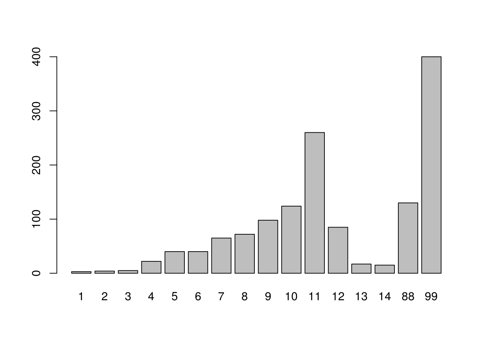
## ¿Podría Ud. indicarme en cuál de ellos se encuentra este hogar, considerando tod
## Frequency Percent
## 1 3 0.2174
## 2 4 0.2899
## 3 5 0.3623
## 4 22 1.5942
## 5 40 2.8986
## 6 40 2.8986
## 7 65 4.7101
## 8 72 5.2174
## 9 98 7.1014
## 10 124 8.9855
## 11 260 18.8406
## 12 85 6.1594
## 13 17 1.2319
## 14 15 1.0870
## 88 130 9.4203
## 99 400 28.9855
## Total 1380 100.0000# take income, impute middle range, then divide by persons in household, then deciles
cl19$income_c= rec(cl19$ds_p39,rec =
"1=45000;
2=105500;
3=135500;
4=165500;
5=195500;
6=225500;
7=265500;
8=240500;
9=495500;
10=800500;
11=1250000;
12=1750000;
13=2500000;
14=4000000;
88=NA;
99=NA")## One or more of the old values are recoded into identical new values.
## Please check if you correctly specified the recode-pattern,
## else separate multiple values with comma, e.g. rec="a,b,c=1; d,e,f=2".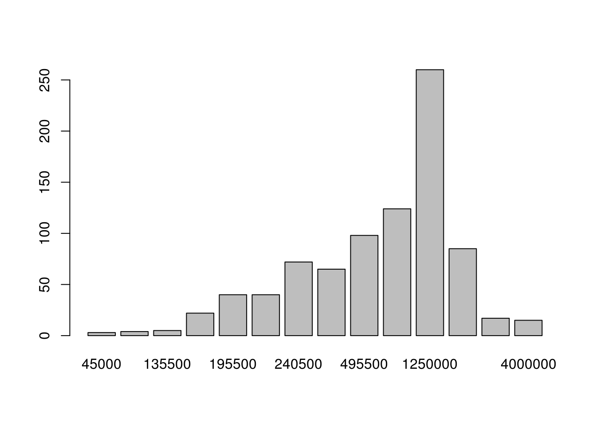
## ¿Podría Ud. indicarme en cuál de ellos se encuentra este hogar, considerando tod
## Frequency Percent Valid Percent
## 45000 3 0.2174 0.3529
## 105500 4 0.2899 0.4706
## 135500 5 0.3623 0.5882
## 165500 22 1.5942 2.5882
## 195500 40 2.8986 4.7059
## 225500 40 2.8986 4.7059
## 240500 72 5.2174 8.4706
## 265500 65 4.7101 7.6471
## 495500 98 7.1014 11.5294
## 800500 124 8.9855 14.5882
## 1250000 260 18.8406 30.5882
## 1750000 85 6.1594 10.0000
## 2500000 17 1.2319 2.0000
## 4000000 15 1.0870 1.7647
## NA's 530 38.4058
## Total 1380 100.0000 100.0000## col.nr var.name
## 1 4 total_hogar
## 2 212 ds_p34
## 3 213 ds_p35
## 4 214 ds_p35a_otro
## 5 215 ds_p36
## 6 216 ds_p36a_otro
## 7 217 ds_p37
## 8 218 ds_p37a_otro
## var.label
## 1 ¿Cuántas personas de 18 años o más, excluyendo al servicio doméstico, viven perm
## 2 ¿Cuántas personas viven permanentemente en este hogar?
## 3 ¿Cuántos adultos viven permanentemente, esto es, 4 o más días a la semana, en es
## 4 ¿Cuántos adultos viven permanentemente, esto es, 4 o más días a la semana, en es
## 5 ¿Cuántos niños viven permanentemente, esto es, 4 o más días a la semana, en este
## 6 ¿Cuántos niños viven permanentemente, esto es, 4 o más días a la semana, en este
## 7 ¿Cuántas guaguas viven permanentemente, esto es, 4 o más días a la semana, en es
## 8 ¿Cuántas guaguas viven permanentemente, esto es, 4 o más días a la semana, en es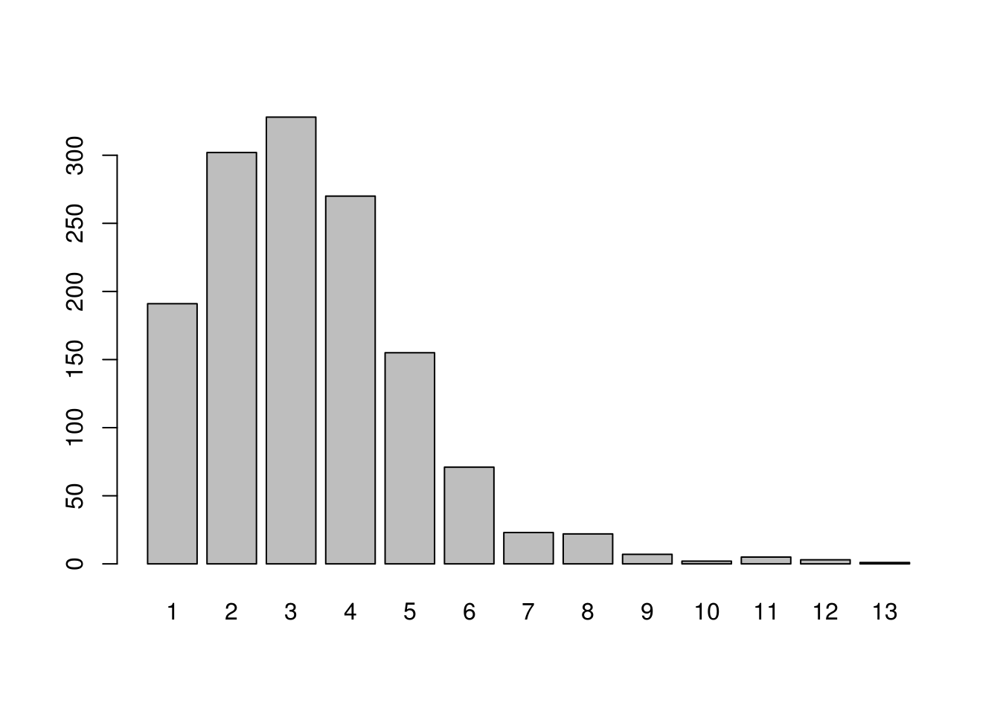
## ¿Cuántas personas viven permanentemente en este hogar?
## Frequency Percent
## 1 191 13.84058
## 2 302 21.88406
## 3 328 23.76812
## 4 270 19.56522
## 5 155 11.23188
## 6 71 5.14493
## 7 23 1.66667
## 8 22 1.59420
## 9 7 0.50725
## 10 2 0.14493
## 11 5 0.36232
## 12 3 0.21739
## 13 1 0.07246
## Total 1380 100.00000dat19$ingreso_pc= cl19$income_c/cl19$ds_p34
# Generar quintiles de ingreso
dat19 %>% mutate(Quint = ntile(ingreso_pc,5)) -> dat19
# Check
freq( dat19$Quint)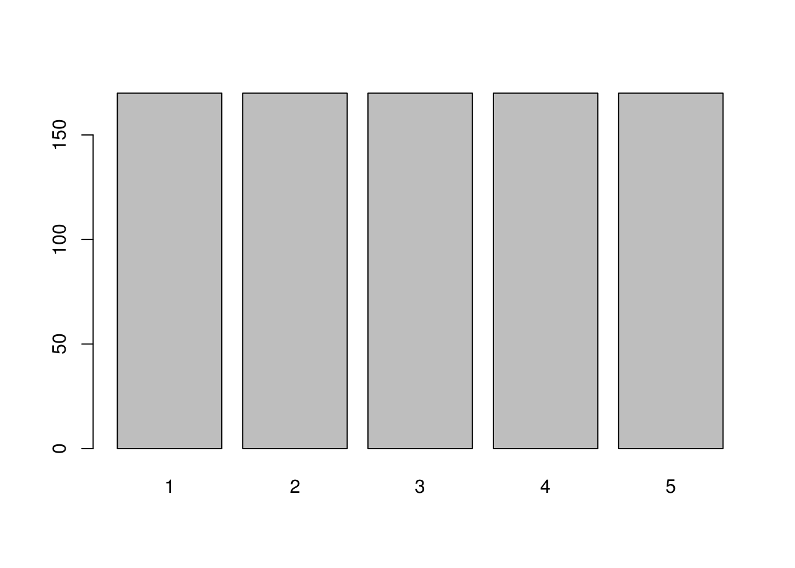
## dat19$Quint
## Frequency Percent Valid Percent
## 1 170 12.32 20
## 2 170 12.32 20
## 3 170 12.32 20
## 4 170 12.32 20
## 5 170 12.32 20
## NA's 530 38.41
## Total 1380 100.00 1001.5.5 d - redistribution 2019
## col.nr var.name
## 1 79 mb_p21
## 2 116 m2_p4_2
## 3 118 m2_p4_4
## 4 119 m2_p5
## var.label
## 1 Ahora, respecto de quién debería tener la principal responsabilidad por el suste
## 2 ¿Qué tan de acuerdo o en desacuerdo está Ud. con "Es responsabilidad del gobiern
## 3 ¿Qué tan de acuerdo o en desacuerdo está Ud. con "Es responsabilidad de las empr
## 4 ¿Quién cree Ud. que debería tener la mayor responsabilidad en reducir las difere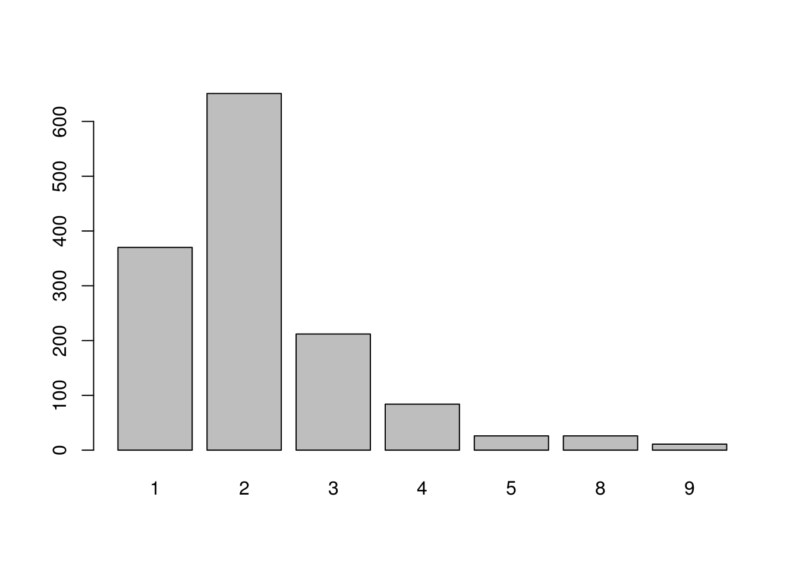
## ¿Qué tan de acuerdo o en desacuerdo está Ud. con "Es responsabilidad del gobiern
## Frequency Percent
## 1 370 26.8116
## 2 651 47.1739
## 3 212 15.3623
## 4 84 6.0870
## 5 26 1.8841
## 8 26 1.8841
## 9 11 0.7971
## Total 1380 100.0000## 1 2
## "Muy de acuerdo" "De acuerdo"
## 3 4
## "Ni de acuerdo ni en desacuerdo" "En desacuerdo"
## 5 8
## "Muy en desacuerdo" "No sabe"
## 9
## "No contesta"dat19$redis <-rec(cl19$m2_p4_2, rec="8:9=NA;else=copy")
dat19$redis <-rec(dat19$redis, rec="rev")
freq(dat99$redis)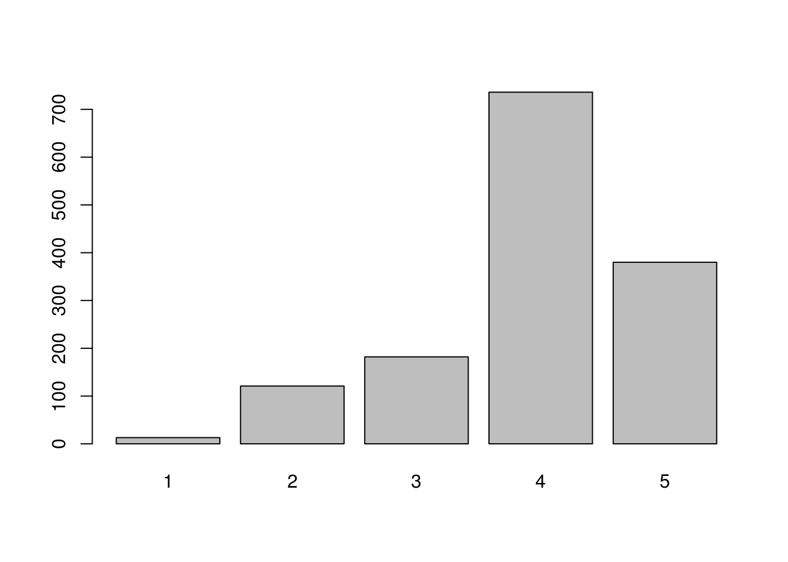
## Gov. must reduce differences in income
## Frequency Percent Valid Percent
## 1 13 0.8649 0.9078
## 2 121 8.0506 8.4497
## 3 182 12.1091 12.7095
## 4 736 48.9687 51.3966
## 5 380 25.2828 26.5363
## NA's 71 4.7239
## Total 1503 100.0000 100.0000dat19$redis <-set_labels(dat19$redis,labels= c("Muy en desacuerdo"=1, "En descacuerdo"=2,"Ni acuerdo ni desacuerdo"=3, "De acuerdo"=4, "Muy de acuerdo"=5))
get_labels(dat19$redis, values="as.name")## 1 2
## "Muy en desacuerdo" "En descacuerdo"
## 3 4
## "Ni acuerdo ni desacuerdo" "De acuerdo"
## 5
## "Muy de acuerdo"#dummy redis
dat19$redis_dummy<-ifelse(dat19$redis>3,1,0)
dat19$redis_dummy <-set_labels(dat19$redis_dummy,labels= c("En desacuerdo"=0, "De acuerdo"=1))
freq(dat99$redis_dummy)
## dat99$redis_dummy
## Frequency Percent Valid Percent
## 0 316 21.025 22.07
## 1 1116 74.251 77.93
## NA's 71 4.724
## Total 1503 100.000 100.00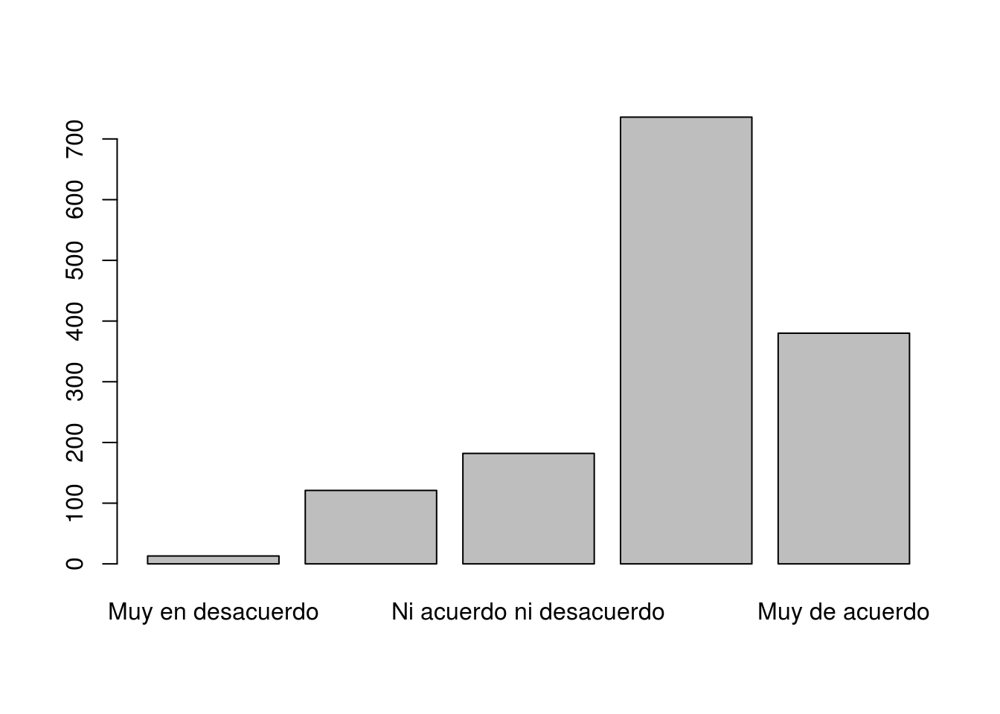
## Gov. must reduce differences in income
## Frequency Percent Valid Percent
## Muy en desacuerdo 13 0.8649 0.9078
## En descacuerdo 121 8.0506 8.4497
## Ni acuerdo ni desacuerdo 182 12.1091 12.7095
## De acuerdo 736 48.9687 51.3966
## Muy de acuerdo 380 25.2828 26.5363
## NA's 71 4.7239
## Total 1503 100.0000 100.00001.5.6 e - estatus subjetivo
##
## 1 2 3 4 5 6 7 8 9 10 88 99
## 44 66 217 307 460 155 76 28 6 8 6 7cl19$m2_p13a <- car::recode(cl19$m2_p13a,"c(88,99)=NA",as.numeric = TRUE)
freq(cl19$m2_p13a) # OK esatus subjetivo 2019## En nuestra sociedad, hay grupos que tienden a ubicarse en los niveles más altos
## Frequency Percent Valid Percent
## 1 44 3.1884 3.2187
## 2 66 4.7826 4.8281
## 3 217 15.7246 15.8742
## 4 307 22.2464 22.4579
## 5 460 33.3333 33.6503
## 6 155 11.2319 11.3387
## 7 76 5.5072 5.5596
## 8 28 2.0290 2.0483
## 9 6 0.4348 0.4389
## 10 8 0.5797 0.5852
## NA's 13 0.9420
## Total 1380 100.0000 100.0000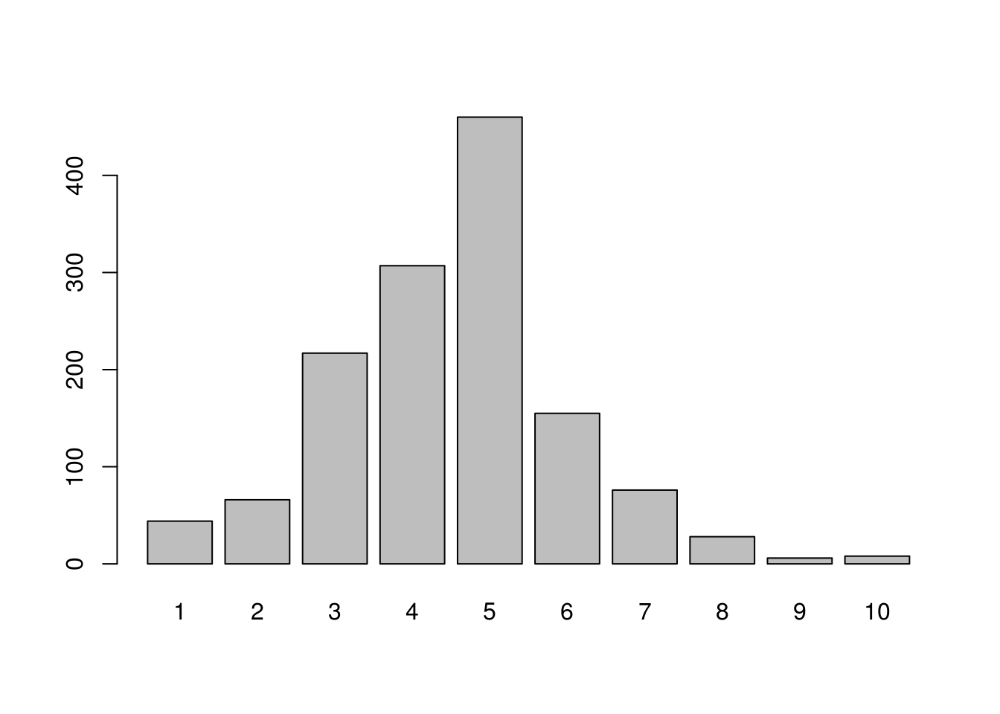
## En nuestra sociedad, hay grupos que tienden a ubicarse en los niveles más altos
## Frequency Percent Valid Percent
## 1 44 3.1884 3.2187
## 2 66 4.7826 4.8281
## 3 217 15.7246 15.8742
## 4 307 22.2464 22.4579
## 5 460 33.3333 33.6503
## 6 155 11.2319 11.3387
## 7 76 5.5072 5.5596
## 8 28 2.0290 2.0483
## 9 6 0.4348 0.4389
## 10 8 0.5797 0.5852
## NA's 13 0.9420
## Total 1380 100.0000 100.00001.5.7 Save 19 data
1.5.8 Save all years data
load("input/data/processed/dat99.RData")
load("input/data/processed/dat09.RData")
load("input/data/processed/dat19.RData")
dat99$year <- 1999
dat09$year <- 2009
dat19$year <- 2019
clw3<- bind_rows(dat99,dat09)
clw3<- bind_rows(clw3,dat19)
save(clw3,file = "input/data/processed/clw3.Rdata")
names(clw3)## [1] "salperobr" "saljusobr" "salperger" "saljusger" "gap_perc"
## [6] "lngap_perc" "gap_just" "lngap_just" "educ_rec" "ingreso_pc"
## [11] "Quint" "redis" "redis_dummy" "ess" "year"